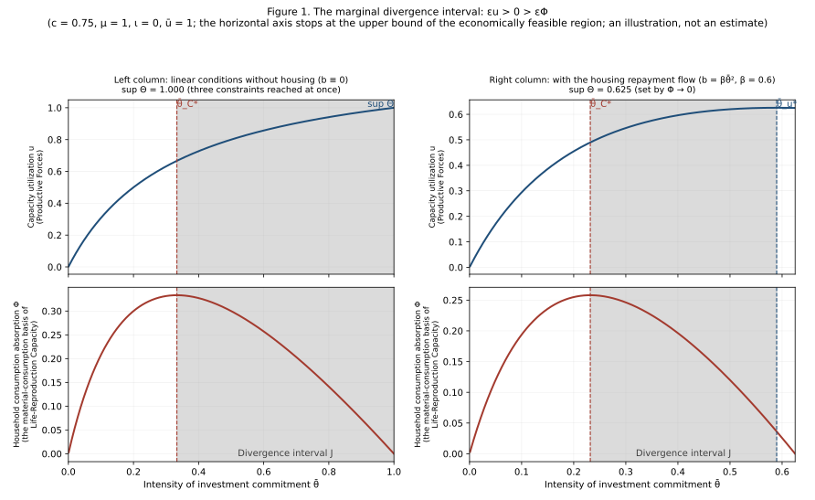
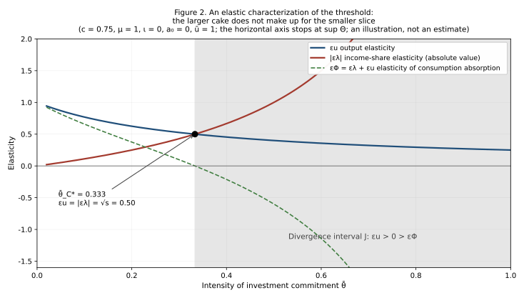

English Abstract
Replacement abstract. Per the author's ruling of 29 August 2026 the English abstract embedded in the sealed Chinese text is a legacy abstract, excluded as a source and replaced here. Per the second review of 29 August 2026, the replacement takes the Chinese 摘要 as its structure and its boundary of information; the English body is used only to disambiguate, to check formulae and to align terminology, and no material is carried in from the body that the 摘要 does not itself state.
How Far Are Humanoid Robots from Entering Ordinary Households? The Elasticity of Household Consumption Absorption to Investment Expansion, and Its Threshold Constraint
That humanoid robots for domestic service should come into ordinary households is the most concrete vision the AI revolution has drawn. This paper gives that vision a macroeconomic examination.
A humanoid robot for the home must clear the same hurdles as any other consumer durable: who manufactures it, who buys it, and how supply and demand are balanced. As of 2026 the industry has come furthest on the first question; the second and the third are still all but blank.
Into an aggregate effective-demand model the paper introduces two assumptions: investment demand contains a committed component predetermined on the previous period's information set, and investment commitment endogenously depresses the household share of national income (written $\mu>0$). From these follows a conditional marginal-divergence proposition: if $\mu>0$, and the household consumption absorption threshold exists and lies in the interior of the economically feasible region (the existence, monotonicity and reachability conditions of Theorem 2), then to its right there exists a non-empty interval of investment commitment $J$ on which the output elasticity is positive while the elasticity of household consumption absorption is negative—each further unit of investment commitment leaving output still rising while household consumption absorption goes on falling.
The left endpoint of $J$ is the household consumption absorption threshold $\bar\theta_{C}^{*}$, which has a closed form; the right endpoint is the first output turning point inside the feasible region, or, where no such turning point exists there, the upper bound $\sup\Theta$ of the economically feasible region, which may be set by the capacity ceiling $u=\bar u$, by $\Phi\to0$, or by another feasibility constraint. The conditions corresponding to the two endpoints, $\Phi'=0$ and $\Phi'=-(1+a_{1})$, are separated by a fixed constant, so that, provided the conditions above hold, $J$ is provably non-empty.
$\mu>0$ is the paper's core structural assumption, not a fact the model yields, and it is not by itself sufficient. The counter-example of 5.4 shows that even with $\mu>0$ the threshold may fall on the boundary of the feasible region or outside it, when induced net exports are strong enough, in which case $J$ degenerates to the empty set. The paper therefore does not claim that investment expansion in general manufactures people who cannot afford to buy; its contribution is to prove that once there is an identifiable channel of distributive compression, and the threshold falls in the interior of the feasible region, the turning point of consumption must come before the turning point of output, and a non-empty divergence interval must lie between them.
The elasticity admits a channel decomposition; under linear conditions without housing the threshold is exactly the point at which the expansion of output is precisely offset by the contraction of the income share. The three "bridges"—household debt, net exports and asset prices—do not act in the same direction on the two endpoints of the divergence interval. Computed bridge by bridge over the full economically feasible region (which includes $\Phi>0$ and $u\le\bar u$), the direction is uniform: every configuration examined narrows the interval; and when induced net exports are strong enough, the economy strikes the capacity ceiling before consumption turns, and the divergence interval is pushed out of the feasible region altogether.
The paper distinguishes strictly between two propositions that are routinely conflated: divergence, that the two objectives move in opposite directions, is proved; backlash, that deficient effective demand comes back to bring investment expansion to an end, is not proved, and is offered only as a conjecture grounded in observation of the real world. Section 6 states that conjecture in precise form, identifies four specific obstacles, proposes three research routes, and sets out a body of facts from China in 2025—facts consistent with the backlash conjecture, but consistency is not identification.
The paper draws one line openly: what the model proves is that the two objectives come into conflict, not how the choice between them ought to be made; the latter is a normative axiom of Synthesis Political Economy.
Keywords: effective demand; elasticity of household consumption absorption; investment commitment; humanoid robots; income distribution; supermultiplier; capacity utilization; Life-Reproduction Capacity
Abstract
That humanoid robots for domestic service should come into ordinary households is the most concrete vision the AI revolution has drawn. This paper gives that vision a macroeconomic examination.
A humanoid robot for the home must clear the same hurdles as any other consumer durable: who manufactures it? who buys it? how are supply and demand balanced? As of 2026 the industry has come furthest on the first question; the second and the third are still all but blank.
This paper introduces two assumptions into an aggregate effective-demand model: investment demand contains a committed component predetermined on the previous period's information set; and investment commitment endogenously depresses the household share of national income (written $\mu>0$). From these follows a conditional marginal-divergence proposition:


Figure 2. An elastic characterization of the threshold. The horizontal axis is the intensity of investment commitment $\bar\theta$ and the vertical axis elasticity. The output elasticity $\varepsilon_{u}$ falls as $\bar\theta$ rises, while the absolute value of the income-share elasticity $|\varepsilon_{\lambda}|$ rises as $\bar\theta$ rises; the point where the two curves cross is the household consumption absorption threshold $\bar\theta_{C}^{*}$. To the left of the crossing, $\varepsilon_{\Phi}=\varepsilon_{\lambda}+\varepsilon_{u}>0$; to the right it is negative. In the illustration with $c=0.75$, $\iota=0$, $a_{0}=0$, both are equal at the crossing to $\sqrt{s}=0.5$. An illustration, not an estimate.
4.6 Why the Formulation "Optimal Ratio" Is Not Used
A neater way of writing it would be: the ratio that maximizes output differs from the ratio that maximizes consumption ($\arg\max u\ne\arg\max\Phi$). This paper does not make that its centre, for two reasons.
First, it may be undefined. Where $\sup\Theta$ is settled by $\lambda>0$ or by $\Phi>0$, the right endpoint of $\Theta$ does not belong to $\Theta$; and if $u$ is then strictly increasing on $\Theta$, $\arg\max_{\Theta}u$ does not exist.
Second, even where it exists it is close to trivial. If $u$ is increasing over the whole region while $\Theta$ has a closed upper bound, then the maximum of $u$ must lie on the boundary and the maximum of $\Phi$ at an interior point, and their being different is a definitional corollary with no independent content.
The marginal divergence interval is unaffected by either point: it is a local statement about the sign of elasticities, and has nothing to do with whether a maximum exists or where it lies. This too is a concrete instance of "the qualitative governs the quantitative"—a proposition about direction is more robust than a proposition about level, and closer to the question one actually wants to ask.
4.7 The Double Role of Transfer Payments: A Counter-Intuitive Conclusion
Government's agency has two handles: transfer payments $\tau$ (the intercept that raises the household income share) and the compression intensity $\mu$ (the marginal pressure of investment commitment on the household share). They do different things, and they cannot substitute for each other.
Proposition 2 (transfer payments and compression intensity). Under linear conditions without housing ($a_{0}=0$):
| On the level of consumption absorption $\Phi$ | On the absorption threshold $\bar\theta_{C}^{*}$ | On the critical investment rate $(I/Y)_{C}^{*}$ | |
|---|---|---|---|
| Raising transfer payments $\tau$ | $\partial\Phi/\partial\tau>0$ | sign depends on $c\bar\lambda_{0}\lessgtr\tfrac34(1-\iota)$ | $<0$ |
| Lowering the compression intensity $\mu$ | indirect (by way of $\lambda$) | $\partial\bar\theta_{C}^{}/\partial\mu<0$, so lowering $\mu$ raises the threshold—*but only within the range where $u^{}\le\bar u$ still holds* | $=0$ |
(Derivation in Appendix D.)
Three readings follow.
First, transfer payments raise the level of household consumption absorption but do not automatically widen the safe space for investment. They treat the symptom—they lift $\Phi$; they do not necessarily move the position of the threshold. To widen the safe space along the channel of distributive compression, $\mu$ must be lowered.
But lowering $\mu$ has a supply-side ceiling, and this must be said in the same breath. From Appendix C, $u^{}=[1-\sqrt{d_{0}/k}]/(c\mu)\propto1/\mu$: the lower $\mu$ is, the less the household income share is compressed, the stronger demand is, and the higher capacity utilization is at the threshold. The reachability condition $u^{}\le\bar u$ therefore gives a lower bound:
$$\boxed{\ \mu\ \ge\ \frac{1-\sqrt{d_{0}/k}}{c,\bar u}\ }$$
Under the illustrative parameters $c=0.75$, $\iota=0$, $\bar\lambda_{0}=1$, $\bar u=1$, that lower bound is $2/3$: at $\mu=2/3$ we have $\bar\theta_{C}^{}=0.500$ while $u^{}=1.000$ is exactly jammed against the capacity ceiling; at $\mu<2/3$ the threshold is pushed out of the feasible region and the premise of Theorem 2 no longer holds (isomorphic to the case $a_{1}\ge0.5$ in 5.4).
The accurate statement is therefore: lowering $\mu$ widens the safe space on the demand side, at the cost of striking the supply-side capacity constraint sooner. This is not a policy that can be pursued all the way.
Second, $\mu$ is an institutional parameter, not a technological one. Lowering $\mu$ means changing how investment is financed: less by land-transfer revenue, less by depressing factor prices, less by the low-interest transfer of household deposits; more by retained corporate profits, by the tax base, and by financing channels that do not squeeze households. This is an adjustment to the allocative structure of the Grand Tripartite, not a single fiscal operation.
Third, the direction in which transfer payments act on the threshold depends on the propensity to consume. Where $c\bar\lambda_{0}<\tfrac34(1-\iota)$, transfer payments raise the absorption threshold—that is, they widen the safe space at the same time as they raise the level of consumption, and both benefits are had together.
A boundary of the model that must be declared: this paper has no government budget constraint.
The model treats $\tau$ as an exogenous variable that directly raises the household income share, and says nothing about where the money comes from: taxation of enterprises or of capital income, cuts in government investment, borrowing, monetary financing, or redistribution within the household sector? Different modes of financing have entirely different effects on $\bar\theta$, on $\mu$, on enterprise investment and on aggregate demand—cutting government investment would lower $\bar\theta$ at the same time, taxing capital income might change $\mu$, and borrowing pushes the problem into the next period.
Proposition 2 can therefore prove only this:
$$\text{Other things equal, and where }\tau\text{ genuinely raises the household share of disposable income, }\Phi\text{ rises.}$$
It cannot prove that in reality "government transfer payments necessarily create incremental effective demand". What this paper identifies is the recipient-side effect of transfer payments; it does not identify their financing-side or general-equilibrium net effects. Supplying a government budget constraint is one further item of unfinished work, alongside the four obstacles of Section 6.
A rough comparison (illustrative, not an estimate). The complete form of the criterion is $c\bar\lambda_{0}\lessgtr\tfrac34(1-\iota)$. The factor $(1-\iota)$ cannot be dropped—the larger the induced-investment coefficient, the lower the threshold.
In 2025 per capita consumption expenditure in China was CNY 29,476 and per capita disposable income CNY 43,377, an average propensity to consume of about 0.68.[4] Taking $c=0.68$ and $\bar\lambda_{0}\in[0.6,\ 0.9]$, $c\bar\lambda_{0}$ falls between 0.41 and 0.61:
$\iota$ 0 0.10 0.187 0.25 $\tfrac34(1-\iota)$ 0.750 0.675 0.610 0.563 taking $c\bar\lambda_{0}=0.41$ raises the threshold raises the threshold raises the threshold raises the threshold taking $c\bar\lambda_{0}=0.61$ raises the threshold raises the threshold critical lowers the threshold Three points must be made: first, the $c$ of the model is the marginal propensity to consume, whereas 0.68 is the average propensity, and the two are not the same; second, $\bar\lambda_{0}$ is the intercept at $\bar\theta=0$, not the current $\lambda$, and this paper offers no estimate of it whatever—$[0.6,\ 0.9]$ is merely a wide interval; third, the conclusion is sensitive to $\iota$—with $c\bar\lambda_{0}$ at the upper end of the interval and $\iota\ge0.19$, the direction of the criterion reverses.
This comparison serves only to indicate the order of magnitude at which the criterion sits and the direction in which it is sensitive. It does not constitute a parameter estimate, and it does not constitute a judgment about conditions in China.
4.8 An Accurate Statement of What Is "Invisible"
Household consumption is itself an aggregate statistic, so one cannot say that it is "invisible in the aggregate data". What the model actually proves is:
A turning point in household consumption absorption does not require a simultaneous turning point in GDP or in capacity utilization; under linear conditions without housing the latter does not occur at all.
The policy proposition that follows must be tied to a feedback rule:
If government's feedback rule uses only indicators of the growth rate and of capacity utilization, it cannot detect from those indicators that household consumption absorption has already turned.
This is not "government cannot detect it"—government can observe household consumption, the income share and balance sheets directly. It is that a particular feedback rule cannot see a particular turning point, and the growth-target regime as it actually operates is a rule of exactly that kind.
4.9 The Compatibility Boundary of a Growth Target
Let the growth rate of capacity be $g(\bar\theta)=(\bar\theta+\iota u)/v$, where $v$ is the capital–output ratio.
Proposition 3. A growth target $\bar g$ is compatible with "not crossing the absorption threshold" if and only if
$$v\le\bar v\equiv\frac{u^{},(I/Y)_{C}^{}}{\bar g},\qquad \text{equivalently}\qquad \bar g\le\bar g_{\max}\equiv\frac{u^{},(I/Y)_{C}^{}}{v}$$
A numerical illustration ($c=0.75$, $\mu=1$, $\iota=0$, $\bar\lambda_{0}=1$; an illustration, not an estimate): under a 5 per cent growth target, a capital–output ratio above 6.67 is incompatible; at a capital–output ratio of 8, the highest compatible growth target is 4.17 per cent.
The meaning: growth target, capital efficiency, and not crossing the boundary—any two of the three settle the feasible range of the third.
Where capital efficiency deteriorates over the long run while the growth target stays fixed, crossing the boundary is not a single mistaken decision but a result forced out by the parameters.
That sentence is worth pausing over. It means that "crossing the threshold" does not usually present itself as somebody having made a wrong decision, but as a succession of decisions each of which was reasonable, accumulating in an environment whose parameters have changed into a position that nobody chose. Responsibility therefore becomes hard to assign, and correction correspondingly hard to make.
V. Three Bridges: Time, Space, Wealth
Nothing goes wrong at once when the absorption threshold has been crossed. The economy builds bridges first.
| The bridge of time | The bridge of space | The bridge of wealth | |
|---|---|---|---|
| Borrowed from | the future income of domestic households | the current income of foreign households | capital gains not yet realized |
| Carrier | household debt $b(\bar\theta)$ | net exports $a_{0},a_{1}$ | asset prices $w(\bar\theta)$ |
| Position in the elasticity decomposition | $-\omega_{b}\varepsilon_{b}$ | enters $\varepsilon_{u}$ by way of $a_{1}$ | $+\omega_{w}\varepsilon_{w}$ |
None of the three creates a domestic final buyer in the current period; they change only where "who buys" is located.
That statement needs one qualification for net exports. Net exports are not merely "passing the problem to someone else"—they may correspond to genuine and sustainable final demand abroad, which is a real terminus and not a postponement. This paper lists them as a "bridge" in respect of the function of taking over the task of absorption from domestic households, not as an assertion that they are spurious or unsustainable.
5.1 The Bridge of Time: Moving Tomorrow's Bread to Today
The residential mortgage is the typical form of the bridge of time. Its economic content is not "a household has bought a durable good" but this:
The household exchanges a single enormous commitment of future consumption for a whole succession of everyday consumption in the present.
Seen from the economy as a whole, this does indeed create final demand in the current period—the house is sold, the developer's inventory is cleared, the orders for steel and cement come through. But at the same time it cuts a channel twenty or thirty years long through the household's future cash flow. The gap in current demand is filled, at the cost of drawing forward the demand of several future years.
The macro allocation is in this way copied by force onto the micro allocation through house prices: government raises the investment share at the level of the national economy, and the household is compelled to raise the investment share within its own budget. The household has not "chosen" to raise its own saving rate—it is what the household has to accept, at the given house price, in order to obtain a right of residence.
This is the real-world content of $b(\bar\theta)$ in this paper's model, and the source of $\varepsilon_{b}>0$.
5.2 The Bridge of Space: Replacing the Buyer with a Foreigner
Turning to exports once capacity has been built is the bridge of space. In the model it is represented by $a_{1}\bar\theta$: the higher the investment commitment, the more exports it induces.
The bridge of space has one advantage the bridge of time does not: it leaves no liability on the balance sheets of domestic households. But it has two constraints: it depends on absorptive capacity abroad, and the incomes of foreign households are not settled by domestic policy; and when a country builds its bridge of space too wide, it turns into a political problem in the countries at the other end.
China's data for 2025 show the work of the bridge of space very clearly. GDP grew 5.0 per cent for the year, of which final consumption expenditure contributed 2.6 percentage points (a contribution rate of about 52 per cent) and gross capital formation 0.8 percentage points (about 16 per cent), leaving about 1.6 percentage points, some 32 per cent, contributed by net exports of goods and services.[4] In the same year, fixed-asset investment for the economy as a whole fell 3.9 per cent and real-estate development investment fell 17.2 per cent.[4]
In other words: the investment engine has already cut out, and it is the bridge of space that has held the growth target up.
5.3 The Bridge of Wealth: Treating Money Not Yet Made as Money Already Made
The wealth effect brought by rising asset prices is the third bridge. It is the most fragile, because it depends wholly on expectations, and expectations can shift abruptly without any news about fundamentals.
Proposition 4 (conditional comparative statics). Write $F(\bar\theta,q)\equiv G-D$, the absorption threshold being defined implicitly by $F=0$. If $F_{\bar\theta}<0$, then $\mathrm{d}\bar\theta_{C}^{*}/\mathrm{d}q=-F_{q}/F_{\bar\theta}$.
What may be asserted: that a change of sign in the wealth effect ($\varepsilon_{w}$ turning from positive to negative) supplies one mechanism by which the absorption threshold falls.
What may not be asserted: whether that change actually lowers the threshold depends on $F_{q}$ and on the joint response of the other channels; whether the change is continuous is not proved; and the wealth channel is not the only one in which a change of state may occur—$a_{1}$, a jump in $\varepsilon_{b}$ caused by a credit ceiling, government expenditure rules, debt write-downs, and risk premia may all switch.
5.4 What the Bridges Change and What They Do Not
What the three bridges can and cannot postpone is the most important point of this section. First, a proposition that runs smoothly as intuition but does not stand up in this paper's model.
Consider a natural but invalid intuition: "the more bridges, the wider the divergence interval". The reasoning runs: the bridges hold output up and so postpone the turning point of output $\bar\theta_{u}^{}$; debt meanwhile brings forward the turning point of consumption $\bar\theta_{C}^{}$; pulled at both ends, $J$ widens. It goes wrong at the first step.
And over the full economically feasible region the direction is exactly the reverse. Computed bridge by bridge under the four constraints of Appendix A ($0<\lambda\le1$, $M_{\iota}>0$, $\Phi>0$, $0 < u \le \bar u$), with $c=0.75$, $\mu=1$, $\iota=0$, $\bar\lambda_{0}=1$, $\bar u=1$ (an illustration, not an estimate):
| Case | $\bar\theta_{C}^{*}$ | $\bar\theta_{u}^{*}$ | $\sup\Theta$ | Which constraint sets the bound | $\lvert J\rvert$ |
|---|---|---|---|---|---|
| No bridge (baseline) | 0.333 | not in $\Theta$ | 1.000 | three reached at once | 0.667 |
| Bridge of time $\beta=0.3$ | 0.273 | not in $\Theta$ | 0.769 | $\Phi\to0$ | 0.496 |
| Bridge of time $\beta=0.6$ (right column of Figure 1) | 0.232 | 0.590 | 0.625 | $\Phi\to0$ | 0.358 |
| Bridge of time $\beta=1.0$ | 0.194 | 0.412 | 0.500 | $\Phi\to0$ | 0.218 |
| Bridge of wealth $c_{w}=0.05,\ w=2\bar\theta$ | 0.366 | not in $\Theta$ | 0.714 | $u=\bar u$ | 0.348 |
| Space · induced $a_{1}=0.4$ | 0.333 | not in $\Theta$ | 0.385 | $u=\bar u$ | 0.051 |
| Space · induced $a_{1}=0.5$ | not an interior point of $\Theta$ | — | 0.333 | $u=\bar u$ | degenerates to empty |
| Space · induced $a_{1}=0.6$ | not an interior point of $\Theta$ | — | 0.294 | $u=\bar u$ | degenerates to empty |
| Space · autonomous $a_{0}=0.05$ | 0.281 | not in $\Theta$ | 0.800 | $u=\bar u$ | 0.519 |
| Space · autonomous $a_{0}=0.10$ | 0.224 | not in $\Theta$ | 0.600 | $u=\bar u$ | 0.376 |
Four things run counter to the original intuition.
First, in every configuration examined the bridges narrow the divergence interval, and not one of them widens it. The baseline 0.667 is the widest figure in the table.
And note the $\sup\Theta$ column: in six of the ten rows the upper bound is set unambiguously by $u=\bar u$, while in the baseline row three constraints are reached at once. That is to say, the right endpoint of the divergence interval is often not "output has peaked" but "capacity has been struck"—a layer entirely invisible until the feasible region is completed.
Second, the debt bridge does not postpone the turning point of output; it manufactures that turning point and brings it forward. $b'$ enters the numerator of $u'$ with a negative sign, and the repayment flow depresses $\varepsilon_{u}$ at the same time. In the baseline case there was no interior peak at all ($u$ rose all the way to the upper bound of the feasible region); once the repayment flow is added, the peak appears at 0.590—both endpoints move left together, and $J$ contracts from 0.667 to 0.358.
Third, the wealth bridge postpones the turning point of consumption, not the turning point of output. $w'>0$ raises $G$ directly; it also raises $D=\mu u+b'$ by way of $u$, so the rightward shift is not unconditional. Under this paper's parameters the rightward shift does hold—the condition required reduces to $1+c_{w}\gamma>c,u$, and on $\Theta$ we have $cu\le c\bar u<1$, so the condition is satisfied automatically and the point at which $R=1$ moves right from 0.333 to 0.366. This is exactly the opposite of "the bridges cannot postpone the turning point of consumption".
Fourth—and this one becomes visible only once the feasible region is completed—induced net exports can push the divergence interval out of the feasible region altogether. Analytically, where $a_{0}=0$, $\bar\theta_{C}^{*}$ is independent of $a_{1}$ ($a_{1}$ cancels from both sides of the threshold condition $\lambda M_{\iota}=\mu(1-\iota)\bar\theta$; where $a_{0}>0$ that independence no longer holds), while the utilization bound
$$\bar\theta\big|{u=\bar u}=\frac{\bar u,d{0}-a_{0}}{(1+a_{1})-\bar u,c,\mu}$$
falls monotonically in $a_{1}$: it is 1.000 at $a_{1}=0$, 0.385 at $a_{1}=0.4$, exactly 0.333 at $a_{1}=0.5$—equal to $\bar\theta_{C}^{*}$—and down to 0.294 at $a_{1}=0.6$, already to the left of the threshold.
Its economic meaning is worth pausing over: where the export orientation is strong enough, the economy strikes the capacity ceiling before household consumption absorption turns. The divergence has not been eliminated; it has never entered the observable region—because a different constraint has taken over. This offers an explanation, within the model, of why export-oriented economies do not readily expose the problem of the ratio.
But this too must be said plainly: it is a result under this particular set of illustrative parameters, and the $a_{1}=0.5$ row is a knife-edge case ($\bar\theta_{C}^{*}$ coinciding exactly with the upper bound); it must not be taken for a general conclusion. It also shows that the premise of Theorem 4—that $\bar\theta_{C}^{*}$ is an interior point of $\Theta$—really can fail in realistic configurations.
The intuition that "the more bridges, the wider the divergence interval" therefore does not hold, and the direction is exactly the reverse. The one thing the model supports is:
$$\boxed{\ \text{In every configuration in which }\bar\theta_{C}^{}\text{ is an interior point of }\Theta,\ \bar\theta_{C}^{}<\bar\theta_{u}^{*}\ \text{holds strictly.}\ }$$
No bridge can eliminate the divergence where it exists; what the bridges can do is move its position, narrow its length, or—in the case of induced exports—push it out of the feasible region, so that the premise of the theorem no longer holds.
A limitation of the model that must be declared. This paper's model represents only the cost side of the three bridges—the crowding out by $b$'s repayment flow, the wealth effect of $w$—and not the side on which they create demand in the current period: the final demand constituted by the act of buying a house, the output constituted by the export orders themselves. The result in the table above that "the debt bridge depresses output" is therefore in part an artefact of the model's specification, and cannot be read directly as a judgment about reality. Writing both sides of the bridges into the model is one further item of unfinished work, alongside the four obstacles of Section 6.
What, then, answers the question of why the boundary can be crossed for many years together? Not that the bridges widen it, but two properties this paper has already proved or argued:
- Corollary 4.1: under linear conditions without housing (and with $d_{0}>c\mu a_{0}$), the sign of $u'$ is independent of $\bar\theta$, and inside $J$ the demand side gives no signal of a turning point—if the right endpoint of the interval is the striking of the capacity ceiling, that is a supply-side signal, not a demand-side one;
- the wide threshold of Section 7: where $R$ stays nearly flat around 1 for a long time, the turning point of consumption has no definite date at all.
A turning point that cannot be seen, together with a turning point that has no date—that is what allows the crossing of the boundary to persist.
VI. Backlash: A Proposition Not Yet Proved, Whose Phenomena Have Already Appeared
This section deals with the point at which the boundaries of the paper are most severely strained.
6.1 Divergence and Backlash: Not Stronger, but More Basic
A natural way to write it would be: beyond the threshold, effective demand strikes back at investment and the economy falls into crisis. This paper does not write it that way.
First, the relation of strength between the two must be sorted out, since it is often got backwards. Divergence is not a stronger empirical proposition than backlash—quite the reverse. Backlash further requires that investment, output or utilization eventually fall, and it is stronger both in its causal chain and in its empirical content. The accurate statement is:
Divergence is not a stronger empirical proposition than backlash; it is a more basic proposition about the conflict of objectives.
Backlash asks whether the expansion of Productive Forces can be sustained; divergence asks whether, even if it can be sustained, it ought to be continued. The first is a judgment about sustainability, the second an ordering of objectives.
That distinction settles the structure of the argument. If the case rested wholly on backlash, "Life-Reproduction Capacity takes primacy over Productive Forces" would degenerate into a precautionary principle—go past it and things collapse, so do not go past it. Government can answer that head-on: "I have ways of not collapsing"—borrowing, exports, asset prices; all three bridges are there. The value claim is thereby swallowed by a technical question.
The divergence proposition offers no such exit. What it says is: on the interval $J$, every additional unit you invest gives you one more unit of output and one less unit of household consumption absorption. The question is not whether it can be held up, but what is being held up once it has been.
That does not make backlash unimportant. Backlash is the next stop on this research programme, and the phenomena it predicts have already appeared in the real world. Three things follow in order: how backlash occurs at the micro level, what facts consistent with it have appeared at the macro level, and how far backlash can be proved mathematically.
6.2 Backlash at the Micro Level: The Moment the Mortgage Is Signed
Begin with the smallest unit.
A household decides to lever up and buy a house on a mortgage. At the moment of signing, the house has not been delivered, income has not changed, employment has not changed, prices have not changed—nothing has happened in the fundamentals. But the household's economic behaviour changes abruptly at once:
- non-essential spending is cut, and the household economizes;
- precautionary saving rises, because the consequence of unemployment has gone from "one income less" to "the payments stop";
- replacement of durables, travel, and spending on education are postponed, and even childbearing is postponed;
- expectations of future income shift from "may rise" to "must not fall".
The change is not gradual; it is a jump. And its trigger is the moment of signing.
The point in time at which a household decides to buy a house with a mortgage is the threshold at which its future consumption strikes back at its present everyday consumption.
This jump point is in principle identifiable in micro data—unlike the macro threshold, it does not depend on an unobservable structural derivative; it is an object with a definite date, a control group, and a design that admits a discontinuity approach. But it must be said plainly: it has not to this day been identified in that way. The literature cited below estimates average effects and heterogeneous responses, not the size of the jump at the moment of signature; turning that jump point from a narrative into a parameter is exactly the work still to be done on route three of 6.5.
The existing empirical basis is this: Mian, Sufi and Verner show, on a panel of thirty countries, that expansions of household debt presage subsequent slowdowns in growth; Dynan shows, on US micro data, the suppression of consumption by debt overhang; Fan and Yavas show, on Chinese micro data, the crowding out of household consumption by mortgage debt; and Cloyne, Ferreira and Surico show that households with mortgages and households without respond to the same shock in fundamentally different ways.[7]
This micro threshold is the source of the intuition for the macro threshold, but it is not a proof of the macro threshold. From "every household has a jump point" one cannot infer "there is a jump point in the aggregate"—the distribution of individual thresholds may be dispersed enough to leave the aggregate curve entirely smooth. That is precisely the problem of the "wide threshold" to be discussed in Section 7.
6.3 At the Macro Level: A Body of Facts from China in 2025
As a theoretical proposition, backlash has not been proved. But the phenomena it predicts have already appeared.
The numbers in the two tables below are facts. The causal reading of them is not—the line will be drawn at the end of this subsection.
Figures from the Statistical Communiqué on National Economic and Social Development of China for 2025:[4]
| Indicator | 2025 |
|---|---|
| Gross domestic product | CNY 140.1879 trillion, up 5.0% |
| Contribution of final consumption expenditure to growth | 2.6 percentage points (contribution rate about 52%) |
| Contribution of gross capital formation to growth | 0.8 percentage points (contribution rate about 16%) |
| Fixed-asset investment, whole economy | CNY 49.1109 trillion, down 3.9% |
| Real-estate development investment | CNY 8.2788 trillion, down 17.2% |
| Total retail sales of consumer goods | CNY 50.1202 trillion, up 3.7% |
| Per capita disposable income, national | CNY 43,377, up 5.0% |
| Per capita consumption expenditure, national | CNY 29,476, up 4.4% |
| Consumer prices | level with the previous year (0.0%) |
Macro leverage data from the National Institution for Finance and Development:[6]
| Indicator | 2025 |
|---|---|
| Macro leverage ratio | 302.4%, up 11.8 percentage points over the year |
| Household-sector leverage ratio | 61.4% → 59.4%, down 2.0 percentage points over the year |
| Growth of household debt | 0.5% (a historic low) |
| Growth of housing loans | −1.5%, negative for eleven consecutive quarters |
| Growth of consumer loans | 0.2% (a historic low) |
| Leverage ratio, non-financial corporate sector | up 6.2 percentage points over the year |
| Leverage ratio, government sector | up 7.6 percentage points over the year |
Put the two tables together and a complete picture appears.
First, investment expansion has indeed reversed. Real-estate development investment fell 17.2 per cent, fixed-asset investment for the whole economy fell 3.9 per cent, and the contribution of capital formation to growth fell to about 16 per cent. These are facts that can be read directly off the communiqué; no model is required.
Second, the reversal occurred at the same time as households stopped taking on debt. Housing loans have grown negatively for eleven consecutive quarters, and the household leverage ratio fell 2.0 percentage points over 2025, with the decline widening quarter by quarter over the last three (the four quarters changed by 0.1, −0.5, −0.6 and −1.1 percentage points; the quarterly figures do not sum exactly to the annual figure because of rounding). The bridge of time has not been dismantled; fewer people are walking onto it.
Whether the households' withdrawal is due to an income constraint (they cannot) or to a change in expectations (they will not)—this body of aggregate data cannot tell apart. Separating the two requires micro identification, which belongs to route three of 6.5. This paper passes no judgment here.
Third, households are contracting their consumption absorption even though income is growing. Per capita disposable income grew 5.0 per cent while per capita consumption expenditure grew only 4.4 per cent—consumption growing persistently more slowly than income means that the average propensity to consume is still falling. And CPI was level at 0.0 per cent for the year—a price signal consistent with weak demand (prices are affected at the same time by energy, food, supply conditions and statistical weights, and cannot be attributed to demand alone).
Fourth, leverage has shifted between sectors rather than disappearing. The household sector fell 2.0 percentage points, the corporate sector rose 6.2 and the government sector rose 7.6, and the macro leverage ratio was pushed passively up to 302.4 per cent. Households withdrew, and government and enterprises took it over. This accords with the structure of this paper's model, in which government is the agent and the household the constraint boundary—the household cannot veto an investment decision, but it can refuse to lever up for it.
6.3.1 What This Body of Facts Establishes, and What It Does Not
Two things can be said with certainty: investment expansion did indeed reverse; and the reversal occurred at the same time as the contraction of household credit. Both are facts, not inferences.
What cannot be said with certainty is that the former was caused by the latter.
The same body of data is equally consistent with several other explanations—a deliberate tightening of real-estate financial policy, a peak in housing demand caused by demographic structure, a supply-side contraction set off by credit events among developers, and combinations of these. To separate "deficient effective demand brought investment expansion to an end" from those explanations requires precisely the identifying conditions, not currently available, discussed in the next subsection.
The position of this paper, in two sentences, with no rhetoric to smooth over the distance between them:
As a theoretical proposition, backlash is not proved. The phenomena backlash predicts have already appeared, and have appeared more than once—enough to warrant treating it as a formal research programme.
6.4 How Far Can the Mathematics Be Taken? What Are the Obstacles?
Now to the place where things must be stated plainly.
What can already be proved (each of the following presupposes the existence, monotonicity and reachability conditions of Theorem 2):
- the household consumption absorption threshold $\bar\theta_{C}^{*}$ exists, is unique, and has a closed-form solution;
- at that threshold the output elasticity is still strictly positive ($\varepsilon_{u}=s_{\theta}>0$);
- therefore $\bar\theta_{C}^{}<\bar\theta_{u}^{}$ holds strictly, and the divergence interval $J$ is non-empty;
- under linear conditions without housing, if $d_{0}>c\mu a_{0}$, $J$ extends to the upper bound of the feasible region (Corollary 4.1);
- the directions in which transfer payments and the compression intensity act on the threshold can each be determined (the latter subject to $u^{*}\le\bar u$).
The dependence of these items on the premise is substantive. Where the threshold falls on the boundary of the feasible region or outside it—the $\iota=0.20$ column of the table in 4.4 and the $a_{1}\ge0.5$ rows of the table in 5.4 are configurations of that kind—items 1 and 3 do not hold. $\mu>0$ is not by itself enough to guarantee that the divergence interval exists.
What cannot be proved: that aggregate effective demand falls beyond the threshold, that the return on investment falls, that investment reverses itself, that the economy falls into a self-reinforcing trap; nor can it be proved that Life-Reproduction Capacity as a whole declines.
Conjecture (intertemporal backlash of effective demand). Where investment commitment is sustained ($\bar\theta_{t+1}=\bar\theta_{t}=\bar\theta$) and capacity accumulates as $Y^{}_{t+1}=(1-\delta)Y^{}{t}+I{t}/v$, there exists $\bar\theta_{ED}^{}>\bar\theta_{C}^{}$ such that
$$\frac{\partial\ln u_{t+1}}{\partial\ln\bar\theta_{t}}=\underbrace{\varepsilon_{Y_{t+1}}}{\text{next period's demand}}-\underbrace{\varepsilon{Y^{}{t+1}}}{\text{next period's capacity}}\ \le\ 0\qquad\forall,\bar\theta\ge\bar\theta_{ED}^{}$$
The intuition of the conjecture is clear: investment commitment simultaneously raises next period's capacity (the denominator) and depresses next period's household demand (the numerator). The new capacity needs new buyers, and the process of manufacturing that capacity is destroying buyers. This is the precise intertemporal form of "machines make machines—who will buy the bread?"
Four obstacles. Why it is to this day a conjecture and not a theorem:
Obstacle one: this paper's current-period model sets $\partial Y^{*}{t}/\partial\bar\theta{t}=0$.
The model contains only the demand effect of investment, not its capacity-creating effect. This is not an oversight; it is the price paid for having a closed-form solution for the current-period threshold. Once $Y^{}_{t+1}=(1-\delta)Y^{}{t}+I{t}/v$ is introduced, the model turns from a static equation into a difference dynamical system, the closed form disappears at once, and the stability conditions have to be derived afresh. This is a technical obstacle; it can be overcome, but at the price of the present analytical simplicity.
Obstacle two: the model has a single aggregate goods market and no sectoral structure.
The chain of "machines making machines" runs precisely inside the investment-goods sector. An aggregate model cannot express the question "how long is the chain"—it adds investment goods and consumption goods into a single commodity, and the length of the chain is a variable that vanishes in the aggregation. To make the chain visible again requires at least two producing sectors, investment goods and consumption goods, each with its own capacity and its own clearing condition. This is a structural obstacle; it too can be overcome, but the dimension of the model rises considerably.
Obstacle three: there is no constraint equation on the enterprise side.
The complete chain of backlash is: household demand falls → capacity utilization falls → the return on investment falls → enterprises cut investment → investment reverses itself. The last arrow is missing from this paper's model: enterprises enter it only through the constants $\iota$ and $a_{1}$, with no profit constraint $\pi(\bar\theta)\ge\underline\pi$, no inventory equation, no financing constraint, and no condition of refusal. So long as $\iota$ is a constant, enterprises will never cut investment, and the loop of backlash can never close.
Making $\iota$ endogenous as $\iota(u)$ is the obvious next step, but it would turn the model into a non-linear dynamical system, and uniqueness and stability would both have to be discussed afresh. This is the most substantial obstacle in this paper.
Obstacle four: the identification of $\mu$.
$\mu\equiv-\partial\lambda/\partial\bar\theta$ is a structural derivative with no directly observable counterpart. What is seen in the data is the co-movement of $\lambda$ and $\bar\theta$, and mixed into that co-movement are reverse causation (a low household share raises saving, and high saving raises investment) and common shocks (a single policy turn changing both at once). The coefficient from an OLS regression of $\lambda$ on $\bar\theta$ is not $\mu$.
Worse: investment commitment in China is policy-endogenous, and policy itself responds to the level of $\lambda$; and in the sample only one complete "crossing and backlash" cycle has been observed (real estate, expansion and reversal together running roughly 2016–2025; the periodization is this paper's rough division and not an official one), so that degrees of freedom are severely lacking. This is an identification obstacle, and it is harder than the first three, because it cannot be solved by improving the model—only by finding exogenous variation.
Why the available data cannot simply be forced. To sum up: what this paper needs is a structural parameter, not a correlation coefficient; the usable sample amounts to one incomplete cycle; and the key variable is policy-endogenous. To force out, under those conditions, a figure of the form "China's household consumption absorption threshold is XX per cent" would look highly persuasive and would in fact be an assumption dressed as a conclusion. This paper declines to do it.
6.5 Directions for Further Research
Three routes, of increasing difficulty, and one further off:
Route one: a two-sector supermultiplier model with capacity creation. Separate the investment-goods sector from the consumption-goods sector, specify a capacity-accumulation equation for each, and make $\iota$ endogenous as a function of utilization. The aim is to derive sign conditions for $\partial u_{t+1}/\partial\bar\theta_{t}$. This route is purely theoretical, requires no new data, and can begin at once. The expected result is that the existence of a backlash threshold can be proved under an explicit set of parameter conditions, and that the set of conditions is itself informative—it will tell us in what circumstances backlash will not occur.
Route two: identifying $\mu$ by quasi-natural experiment. Candidate sources of exogenous variation include differentiated provincial reforms of the land-transfer system, differences in the tranches and amounts of the monetized resettlement of shanty-town redevelopment over 2015–2018, the rules by which special-purpose bond quotas are allocated across provinces, and the timing shocks of regulation of local-government financing vehicles. These events vary across both time and region, and some of the variation is exogenous to the local household income share. The aim is to estimate a credible interval for $\mu$, not a point estimate. With an interval, the closed form of 4.4 would give an interval for the threshold, and the criterion would touch empirical ground for the first time.
Route three: identifying the structural form of $\varepsilon_{b}$ at the micro level. Using panel data from the China Household Finance Survey (CHFS) or the China Family Panel Studies (CFPS), run a regression-discontinuity design around the date of a first mortgage signature, and estimate the size of the jump in household consumption before and after signing and how long it persists. This route can turn the micro threshold of "the moment of signing" in 6.2 from a narrative into a parameter. It can also answer a key question: is the distribution of individual thresholds concentrated or dispersed?—which settles directly whether the aggregate has a "narrow threshold" or a "wide" one.
Route four (further off): writing $Z$ as a state equation. The four dimensions of childbearing, care, health and education are at present entirely outside the model. To prove the existence of a "Life-Reproduction Capacity suppression threshold" $\bar\theta_{L}^{*}$, state equations must be written for those four dimensions and fed back into the investment decision. This is the hardest step in the whole programme, and the most important—because only at that step does "Life-Reproduction Capacity" turn from a concept into a variable that can enter a model.
6.6 Four Thresholds: Where This Paper Stands in the Programme
The complete chain of "Productive Forces suppressing Life-Reproduction Capacity" involves several different thresholds. This paper does not presuppose their order:
| Threshold | Definition | Status |
|---|---|---|
| $\bar\theta_{C}^{*}$ household consumption absorption threshold | $\varepsilon_{\Phi}=0$ | proved in this paper (closed form) |
| $\bar\theta_{u}^{*}$ current-period output turning point | $\Phi'=-(1+a_{1})$, that is $u'=0$ | proved in this paper to lie to the right of $\bar\theta_{C}^{*}$ (it may not exist within the feasible region) |
| $\bar\theta_{ED}^{*}$ intertemporal backlash of effective demand | $\partial u_{t+1}/\partial\bar\theta_{t}=0$, or the failure of the condition for sales to be realized | conjecture (6.4); requires the capacity-creating effect, sectoral structure, and a constraint on the enterprise side |
| $\bar\theta_{L}^{*}$ suppression of Life-Reproduction Capacity | the $Z$ dimensions (childbearing, care, health, education) impaired and feeding back into investment | requires a state equation for $Z$; later work |
$$\bar\theta_{C}^{}<\bar\theta_{u}^{}\quad\text{(provable under the conditions of Theorem 2)};\qquad \text{the existence and the ordering of }{\bar\theta_{ED}^{},\ \bar\theta_{L}^{}}\ \text{are}\ \textbf{both open questions}$$
Why this is not written as a single increasing chain. A natural conjecture would be that consumption turns first, aggregate demand next, and Life-Reproduction Capacity is impaired last. But there is no theoretical warrant for it: deterioration in the fertility rate, in care and in health may perfectly well precede the turning point of aggregate effective demand. One observation worth noting is that the fall in fertility rates in several East Asian economies appears to have preceded the reversal of their investment. This paper has made no systematic check of that sequence, and uses it here only to show that presupposing an order is dangerous, not to argue for any particular order. To write an unproved ordering into a programme is to let it become, quietly, a premise of the whole research plan. This paper asserts one provable ordering and leaves the rest blank.
VII. The Wide Threshold and Long-Run Low-Frequency Fluctuation
The previous section left a question: if the distribution of individual thresholds is dispersed enough, is there still a threshold in the aggregate?
7.1 What a Wide Threshold Is
Return to the discriminant $\operatorname{sgn}\varepsilon_{\Phi}=\operatorname{sgn}(R-1)$. Theorem 2 requires $R$ to be strictly decreasing and to cross 1; the threshold is then a point, and $\varepsilon_{\Phi}$ turns from positive to negative around it at an appreciable rate—this is a narrow threshold.
But if $R$ changes extremely slowly in the neighbourhood of 1, the case is different. Then:
$$\boxed{\ \text{Wide threshold}:\quad \left|\varepsilon_{\Phi}(\bar\theta)\right|\le\delta\quad\forall,\bar\theta\in[\bar\theta_{1},\bar\theta_{2}],\qquad \bar\theta_{2}-\bar\theta_{1}\ \text{appreciably positive}\ }$$
This is the wide threshold: not that there is no threshold, but that the threshold has been smeared into an interval, on which $\varepsilon_{\Phi}$ stays close to zero for a long time.
Note one logical boundary. If $R$ is still strictly decreasing (however slowly), $\varepsilon_{\Phi}$ can change sign only once and will not oscillate back and forth. To have the sign cross zero repeatedly within an interval, the strict monotonicity of $R$ must be given up—for instance where the offsetting terms of the three bridges make $R$ locally non-monotonic (see sources two and three below). This paper does not distinguish between these two cases: the first is a turning point drawn out, the second a turning point broken up; empirically both appear as a long stretch close to zero, but theoretically they are two different things.
How is $\delta$ to be set? This must be stated, or "wide threshold" is only a manner of speaking. Two workable conventions are available:
- the measurement-error convention: $\delta$ set at some multiple of the estimated standard error of $\varepsilon_{\Phi}$, that is, "statistically indistinguishable from zero";
- the economic-significance convention: $\delta$ set at a value such that the cumulative change in $\Phi$ over one policy cycle (say five years) does not exceed some limit.
This paper has done neither, because $\varepsilon_{\Phi}$ is at present inestimable (see obstacle four in 6.4). "Wide threshold" is therefore in this paper a concept with a definite form but not yet operationalized; fixing $\delta$ is work that becomes possible only after the three routes of 6.5 have been completed.
Three structural sources of a wide threshold:
First, the dispersion of individual thresholds. Households differ in income level, in indebtedness, in age structure and in risk appetite, and they sign their mortgages at different dates. The aggregate curve is a convolution of countless jump points, and convolution smooths jumps away.
Second, mutual compensation among the three bridges. In the decomposition $\varepsilon_{\Phi}=\omega_{Y}(\varepsilon_{\lambda}+\varepsilon_{u})-\omega_{b}\varepsilon_{b}+\omega_{w}\varepsilon_{w}$ the three terms differ in sign. When the income channel turns negative, if the bridge of wealth happens to turn positive (asset prices rising), the two may offset each other for several years. The bridges do not merely postpone the turning point; they also blur it.
Third, policy operating in the opposite direction. Observing consumption weaken, government increases transfer payments, loosens credit and stimulates consumption, pushing $\varepsilon_{\Phi}$ back towards zero. That response is itself a mechanism that widens the threshold—it does not solve the problem of the ratio, but it erases the problem's signal.
7.2 Long-Run Low-Frequency Fluctuation: Resting a Long Time in a State of Imbalance
The consequence of a wide threshold is not "nothing happens" but something else happening.
Under a narrow threshold, crossing the boundary is confirmed fairly quickly by output or price signals, and the pressure to correct arrives concentrated—in its extreme form, that is a crisis. Under a wide threshold the economy does not turn sharply at some date; instead it:
rests a long time at a position of imbalance, and fluctuates about that position at low frequency, with wide amplitude and long period.
This paper calls that long-run low-frequency fluctuation: output growth now high, now low; consumption persistently weak; prices hovering on the edge of deflation; asset prices rising and falling over several rounds; while the ratio itself hardly moves. Every round of fluctuation is explained by cyclical factors, external shocks, policy error or a problem of confidence—because under a wide threshold a structural deviation really does not present itself in structural guise.
Why the word "broadband" is not used. In common usage "broadband" means several frequency bands present at once, whereas what is described here is precisely a single low-frequency, long-period form, and it is therefore called "long-run low-frequency fluctuation". The genuine broadband hypothesis is set up separately in 7.2.1 as a proposition awaiting test, and is not mixed with the qualitative description of this subsection.
Two samples possibly consistent with this state—note, only consistent, not proof. The thirty years in Japan after 1990 are one long sample. China is a sample now unfolding: the household consumption rate rose from 37.9 per cent in 2020 to 40.0 per cent in 2025, moving only 2.1 percentage points in five years and remaining markedly below the world average of 55–60 per cent (the United States above 65 per cent, the European Union about 60 per cent);[6] while in 2025 real-estate development investment fell 17.2 per cent, CPI was level at 0.0 per cent for the year, the household leverage ratio fell 2.0 percentage points, and about a third of growth was contributed by net exports.[4][6]
What these two bodies of facts can and cannot say. What they describe is a state in which low consumption, real-estate adjustment and support from net exports are present at the same time. They cannot prove that long-run low-frequency fluctuation exists—that would require a long enough series, an explicit characterization of frequency, and the exclusion of alternative explanations, none of which this paper has done. They are set out here only to show that such a state is not hypothetical in the real world.
What can be said is: the ratio is indeed moving, but moving extremely slowly; and the short-run amplitude about that position is larger than the displacement of the ratio itself.
7.2.1 The Broadband Hypothesis (Awaiting Test; Not Used in Any Argument of This Paper)
The word "broadband" does not suit the phenomenon of the previous subsection; but once defined clearly it can be advanced as an independent and stronger hypothesis:
The broadband hypothesis. In economies that have crossed the consumption absorption threshold without a crisis, macroeconomic time series will display several significant cyclical frequency bands at once—short cycles (inventory, credit), medium cycles (real estate, capacity) and long cycles (population, intergenerational balance sheets)—rather than a single business-cycle frequency; and the relative power of those bands will vary with the degree of imbalance.
Of the evidence needed to test it this paper has none: a power spectrum or wavelet decomposition, a variance decomposition by frequency after band-pass filtering, or a Markov regime-switching model identifying "imbalanced" and "normal" states.
The hypothesis therefore carries no argumentative function in this paper and is registered here only as an item in the research programme. The body of this paper uses "long-run low-frequency fluctuation" throughout.
7.3 The Policy Implications of a Wide Threshold
A wide threshold has one particularly unfavourable property:
At the same time as it gives you time, it takes away your alarm.
A narrow threshold is dangerous but at least honest—it gives a definite signal at some date. A wide threshold gives the economy a longer window for adjustment, but at the same time makes the question "have we already crossed?" undecidable in the data for a long time. The result: the later the intervention, the greater the accumulated imbalance; and precisely because there is no alarm, intervention is always postponed.
Put together with the observation of 4.8, this property makes a fairly bleak combination: the feedback rule of the growth-target regime cannot see the turn in consumption absorption, and the wide threshold leaves that turn without a definite date. Superimposed, the two allow the boundary to be crossed for many years without being acknowledged.
This too is why this paper stresses "elasticity" rather than "level". A proposition about level (is the ratio too high?) cannot be answered under a wide threshold; a proposition about direction can still be asked.
But it must be said clearly how far it can be asked. Estimating the sign of $\varepsilon_{\Phi}$ directly requires identifying $\mu$, and obstacle four in 6.4 has already explained that this cannot be done; the three series of the household income share, the average propensity to consume and household-sector credit give co-movement, not that structural derivative. What is observable, and independent of structural parameters, is a fact of the form of item 3 in Appendix G: whether there exists a period during which household consumption absorption weakens continuously while output and capacity utilization rise continuously. That does not give a numerical value for the elasticity, but it gives the combination of its signs.
Direction is more measurable than level, which is the concrete methodological gain of "the qualitative governs the quantitative"—but "more measurable" is not "estimable".
7.4 Three Routes Back to Balance
At this point the routes for restoring the balance between Productive Forces and Life-Reproduction Capacity can be set out in full:
| Route | Mechanism | Cost | Conditions |
|---|---|---|---|
| 1. A spontaneous market crisis | investment collapses, debt is worked out, asset prices are repriced, and the ratio is restored by force through destruction | lost output, unemployment, lasting damage to household balance sheets | narrow threshold; no effective intervention |
| 2. Government intervention | raising household disposable income through transfer payments so as to form incremental effective demand; and at the same time lowering $\mu$ by changing how investment is financed | costs on the financing side (not modelled in this paper); resistance from established structures to adjustment | timely intervention; recognition that $\tau$ and $\mu$ are two different things; and the reduction of $\mu$ is limited by $u^{*}\le\bar u$ |
| 3. Long-run low-frequency fluctuation under a wide threshold | neither collapse nor correction, swinging for a long time about a position of imbalance | time | wide threshold; bridges available to build |
The third route is the easiest to take, because it requires nobody to make a decision. It is also the one whose cost is most concealed: the loss does not appear in GDP.
That sentence is a programmatic judgment, not a conclusion of the model. To say that the cost of this route falls on births, on the care gap and on youth employment is to use the dimensions assigned to $Z$ in 2.3—all of which lie outside this paper's model (see route four in 6.5). What this paper's model can reach is only the one dimension of household balance sheets and consumption absorption. Until $Z$ is written as a state equation, this sentence can be advanced only as programme, not declared as conclusion.
The word "incremental" must be stressed. The point of route two is not "moving money from A to B" but forming effective demand that did not previously exist. If the funds for the transfer payments come from taxing the household sector by an equal amount, $\lambda$ is unchanged, $\Phi$ is unchanged, and nothing has happened. In the model this is simply: $\tau$ must genuinely raise $\bar\lambda_{0}$, and not rearrange things within the household sector.
But "what mode of financing can do that" this paper cannot answer. The model has no government budget constraint (see 4.7), and therefore cannot compare the net effects of taxation, cuts in government investment, borrowing and monetary financing, nor define "fiscal space not yet used". Route two is in this paper a direction, not a plan.
VIII. AI Infrastructure: The Same Criterion Sits Another Examination
Real estate was the previous instance of the investment–consumption ratio problem. Humanoid robots may be the next. And between the two lies a larger case still in progress: AI data centres.
8.1 A Set of Figures
For 2026, forecasts by various institutions of capital expenditure by hyperscale cloud providers cluster in the range of about USD 630 billion to USD 800 billion; counting all data-centre investment, 2026 may touch the USD 1 trillion order of magnitude for the first time. The definitions differ widely between sources, and this paper cites only the order of magnitude.[8]
Meanwhile a turn worth noting has appeared in American public opinion. A Gallup survey of 1,000 adults conducted from 2 to 18 March 2026 (margin of error ±4 percentage points) shows that 71 per cent of respondents oppose the construction of AI data centres in their own area, of whom 48 per cent are "strongly opposed" and 23 per cent "somewhat opposed"; supporters total 27 per cent (20 per cent "somewhat" and 7 per cent "strongly" in favour).[9]
The figure by itself is not startling; the NIMBY effect is familiar enough. But one comparison Gallup provides makes it interesting: in the same survey, opposition to building a nuclear power station locally was 53 per cent—18 percentage points lower than opposition to a data centre.[9]
Americans are now less willing to live next to a data centre than next to a nuclear power station.
A note on definitions. Gallup has tracked local opposition to nuclear power stations since 2001, and its historic high is 63 per cent; the 53 per cent recorded here is not a high. The comparison therefore carries only one meaning: that in the same period local opposition to data centres is higher than to nuclear power stations. It contains no claim whatever about the trend in attitudes to nuclear power.
The reasons given by opponents are distributed as follows: water consumption 18 per cent, energy consumption 18 per cent, effects on quality of life 22 per cent, pollution 16 per cent, rising utility bills 15 per cent, and a negative view of AI itself 14 per cent (multiple answers were allowed, so the percentages sum to more than 100). Among supporters, two-thirds stress economic benefit and 55 per cent mention employment specifically.[9]
The consequences have already reached the projects. In the first three months of 2026, 75 projects were cancelled or delayed because of local opposition; according to Brookings, that project count is already equal to the number of projects affected in the whole of 2025.[10]
On the money figures. The aggregate amounts given in the reporting (about USD 156 billion for 2025 and about USD 130 billion for the first three months of 2026) come at present mainly from a Wikipedia entry and from tallies by advocacy organizations, with no project-by-project source database available for checking. This paper lists them as leads and not as pillars of fact of high certainty; the argument below relies only on project counts and on individual cases with an official record of a vote. Note the definition as well: these projects were cancelled or delayed, and should not be summarized as "blocked".
Specific cases include: the USD 14 billion project at Goodyear and Buckeye in Arizona, withdrawn after a rezoning was refused; a unanimous rejection by the city council of Peculiar, Missouri; the rejection of a USD 1.3 billion project at Chesterton, Indiana; and the USD 12 billion project at Culpeper, Virginia, held up. At the legislative level, Port Washington in Wisconsin passed the first data-centre referendum in the United States on 8 April 2026; the Maine legislature passed a moratorium on 15 April (vetoed by the governor on 24 April); and New York State passed a one-year data-centre moratorium on 4 June.[10]
8.2 This Is Not Merely a NIMBY Movement
To file all these events under "NIMBY" is too cheap an explanation. Three threads point elsewhere.
First, "utility bills" account for 15 per cent. This is not a complaint about noise or about landscape; it is a complaint about the passing on of factor prices. The chain that opponents fear is: the enormous front-loaded investment in data centres raises local demand for electricity, and the cost of rising tariffs is shared out among all the households that use electricity—households paying a factor price for an investment whose final product they do not buy.
This chain has not been verified in this paper. [9] supports only the response rate "15 per cent of opponents mentioned utility bills"; to what degree, and through what mechanism, the increment in data centres' electricity use is transmitted to residential tariffs is an empirical question requiring evidence on the structure of electricity markets and on tariff regimes, and this paper has not addressed it. What is stated here is the content of households' concern, not a causal relation established.
In this paper's language: what households fear is exactly the kind of channel that $\mu>0$ describes—investment commitment depressing households' real disposable income through factor prices. But a response rate in an opinion poll cannot be used to measure $\mu$ ($\mu$ being the structural derivative that 6.4 states expressly cannot be identified); the 15 per cent shows only that this channel occupies a place in households' perception, and says nothing about how strong it is.
Second, "a negative view of AI itself" accounts for 14 per cent. This has already passed beyond the range of a local issue. One report summarizes the phenomenon thus: Americans do not know how to oppose AI, so they oppose data centres.[10] If that judgment holds, then the data-centre controversy is a stand-in for anxiety about employment and distribution—and employment and distribution are precisely the subject of the companion article, A-7.
Third, opposition to data centres exceeds opposition to nuclear power stations. Among supporters, 55 per cent mention employment specifically,[9] while one argument recurring among opponents is that data centres involve enormous capital outlay and yet very few long-term jobs, the two being out of proportion. This paper has not independently verified employment data on data centres, and records only the controversy itself. If the argument holds, then in this paper's language: an investment that fails to raise local household income while pushing local factor prices up acts on local households through the compressing side alone, with no compensating rise in $\lambda u$.
8.3 Isomorphism with Real Estate, and Differences
Where they are isomorphic:
| Chinese real estate (expansion phase roughly 2016–2021) | US AI data centres (since 2024) | |
|---|---|---|
| Character of the investment | enormous, front-loaded, commitment-type | enormous, front-loaded, commitment-type |
| Final demand | taken up by household mortgages (the bridge of time) | not yet landed; sustained mainly by corporate IT budgets and capital-market expectations |
| Channel of cost pass-through | house prices → households' future cash flow | electricity prices → households' current cash flow |
| Form of household feedback | stopping levering up | local votes, referendums, moratoria |
Where they differ—and this must be set out fairly:
- The output of a data centre is an intermediate good and can be exported. The output of cloud services and AI models can be sold to the whole world, and the bridge of space is far wider than it was for real estate. A house cannot be exported; computing power can.
- The American bridge of wealth may be wider than the Chinese one. The US household sector holds a higher proportion of equity assets, and a rise in the price of AI-related assets would in principle produce a wealth effect, that is $\varepsilon_{w}>0$. This paper offers no estimate whatever of $\varepsilon_{w}$, and asserts nothing about its size relative to $\mu$—what is being pointed out is again a variable that ought to be tested. If it is indeed positive, then the other side must be seen at the same time: once asset prices turn, the offset becomes a compounding.
- The financing structure may differ. The general impression is that the principal funders of US AI infrastructure are retained corporate profits and the capital markets, rather than land finance and the low-interest transfer of household deposits. This paper has made no systematic comparison of the investment-financing structures of the two countries; if that impression holds, it would mean a smaller $\mu$. What is pointed out here is a variable that ought to be tested, not a known conclusion.
8.4 What This Paper Judges, and What It Does Not
This paper does not assert that investment in AI infrastructure is already excessive, or that the United States is repeating China's real-estate path. Those judgments would require estimates of $\mu$, $\varepsilon_{b}$ and $\varepsilon_{w}$, and Section 6 has explained that those quantities cannot at present be credibly identified.
What this paper does assert is only this: the criterion is the same one.
$$\text{Whether }R=\frac{G}{D}\ \text{has crossed}\ 1\ \text{settles whether this investment is enlarging or shrinking its own final market.}$$
Here the general form $R=1$ must be used, and not the intuitive $\varepsilon_{u}=|\varepsilon_{\lambda}|$ of 4.3. The latter is equivalent to the former only under linear conditions without housing ($b\equiv0$, $c_{w}=0$); and 8.3 has just pointed out that the United States has precisely a bridge of wealth with $\varepsilon_{w}>0$, which is the case in which that simplification breaks down. The criterion is the same one, but its simplified form cannot be carried across cases.
This general criterion applies to real estate, to data centres, and to humanoid robots alike. The question it asks is always the same: is this investment, at the same time as it creates capacity, creating buyers or destroying them?
That Gallup figure of 71 per cent is the form in which households ask this question in their own way. It is imprecise, unprofessional, and mixed up with noise, with water, and with a general anxiety about AI. But it is an important local channel of feedback for the household pole within the structure of the Grand Tripartite—where households cannot take part in the investment decision, they can exercise a veto over the place where the investment lands.
Not the only channel. Voting, price responses, moving house, litigation, utility rate hearings and consumer politics may all be channels, and they often operate at once. This paper points out only that where investment decisions are not open to households, the veto over location will be used with particular frequency.
Section 6 said that backlash is an unproved conjecture. What Section 8 adds is: households do not wait for a theoretical proof.
IX. Back to Humanoid Robots: Answers to the Three Questions
The three questions of the introduction can now be answered.
9.1 Who Manufactures?—This Question Already Has an Answer
Supply chains are being built out in both China and the United States. Unitree shipped more than 5,500 humanoid robots in 2025, and its prospectus discloses a five-year target of 75,000 humanoid robots a year;[1] Tesla's Optimus, on the public statements, went into small-batch trial production in 2025 and enters mass production in 2026; Agibot has been producing in small batches at a rate of about a hundred a month since October 2024; and Xiaomi has a model of its own design.[3] The capital market has given its judgment: Unitree's market capitalization on its first day of listing was CNY 341.8 billion against 2025 revenue of CNY 1.708 billion, a price-to-sales ratio of about 200.[1]
Prototype manufacture and early batch production are no longer the primary constraint.
But that does not mean the supply side has cleared. What can be mass-produced at present are demonstration models, research models and lightweight models; a domestic-service robot with reliable capability in cooking, cleaning and care of the elderly is not yet mature. Capability, reliability, safety and cost all remain key supply-side constraints. This paper assumes that the technology will get there in the end—that is an assumption, not an accomplished fact.
9.2 Who Buys?—This Is the Real Question
First, some arithmetic.
| Value | As a share of per capita consumption expenditure | |
|---|---|---|
| Unitree R1 Air | CNY 29,900[1] | 101% |
| Unitree G1, entry price | from CNY 85,000[1] | 288% |
| Tesla Optimus target price (USD 20,000–30,000) | about CNY 140,000–210,000[3] | 475%–712% |
| Musk's long-run cost target (USD 10,000) | about CNY 70,000[3] | 237% |
| A hypothetical "CNY 20,000 household model" | CNY 20,000 | 68% |
| Per capita consumption expenditure, national, 2025 | CNY 29,476[4] | 100% |
| Per capita disposable income, national, 2025 | CNY 43,377[4] | 147% |
The cheapest model on the market, at CNY 29,900, is equal to 101 per cent of national per capita consumption expenditure; even brought down to CNY 20,000 it would still be 68 per cent of it, and 46 per cent of per capita disposable income.
What does that proportion mean? The unit prices of common household appliances and of smartphones are usually only a few per cent to a little over ten per cent of per capita consumption expenditure—this is an observation of magnitude, and this paper has made no statistical check of it. But even if that magnitude is relaxed by a factor of two, the conclusion is unchanged: even after one drastic round of cost reduction, a household humanoid robot will still sit at the order of magnitude of a car, not of a household appliance.
This table is a comparison of orders of magnitude, not an affordability analysis. Durables are bought by households and not by individuals, so setting unit prices against per capita consumption expenditure can give only an intuition of magnitude. A formal affordability analysis would require: the ratio of the robot's price to household disposable income, the state of household assets and savings, and instalment and credit conditions (the last of which would turn it into exactly the "bridge of time" of Section 5). This paper has done none of the three.
And the history of the car's diffusion suggests one thing: the spread of the car in China was accomplished less by falling unit prices than by the curve of household income growth lifting households up to it. Washing machines, refrigerators and air conditioners were broadly the same. The diffusion of consumer durables has never been a simple cost curve; it is the meeting of a cost curve with an income curve.
This paper offers that judgment only as a suggestion. To establish it would require a decomposition on a panel of take-up rates, prices and incomes across categories of durables, attributing diffusion between the two channels of falling prices and rising income. That is work this paper has not done.
This pushes the question back to the main line of this paper: if the investment expansion that manufactures the robot is itself depressing the household income share, then the two curves may never meet. The industry is eating its own market.
And there may be a compounding effect here from the companion article: the humanoid robot is a direct vehicle of capital substituting for labour. If the conditions listed in the companion article hold—an elasticity of substitution between capital and labour $\sigma>1$, together with the requisite technological form, factor-market structure, product-demand conditions and distribution of capital ownership—then a fall in the relative price of capital will raise the capital share and lower the labour share. In that case: the cheaper the humanoid robot, the greater its capacity to substitute for labour, the faster the labour share falls, and the faster the household's capacity to buy it falls (assuming here that the fall in the labour share is not offset by transfer payments or other components—$\lambda$ is the household income share, of which the labour share is only one component).
This is a compounding of conditions, not a conclusion. $\sigma>1$ is not by itself enough to guarantee that the labour share falls; the technological form, the structure of factor markets and product-demand conditions must all cooperate. This article does not build its conclusion on the companion article: even setting that channel aside entirely, the divergence result of Section 4 stands independently.
$$\boxed{\ \text{Falling cost is at once the condition of diffusion and the cause of falling purchasing power. This is the central tension the two articles give together.}\ }$$
This paper does not assert that the tension must cause diffusion to fail. Its strength depends on the specific values of $\sigma$ and $\mu$, and neither parameter can at present be credibly estimated (see 6.4). What this paper asserts is: the tension exists, and optimistic forecasts of the "penetration curve" kind systematically overlook it.
9.3 How Are Supply and Demand Balanced?—Two Routes
Route one: wait for cost to fall to what households can bear.
This is the industry's default answer. It requires cost to fall faster than the household income share falls. With $\mu$ and $\sigma$ unknown, that is a bet, not a forecast.
And it has an intrinsic problem of sequence: falling cost depends on scale, scale depends on sales, and sales depend on household purchasing power. Where is the scale to come from before household purchasing power has formed? The present answer is research budgets and commercial display—but the ceiling on those two sources is low, and the revenue structure of 73.6 per cent and 17.39 per cent is the shape of that ceiling.
Route two: build the demand side.
The second route turns the question from technology to distribution. Return to the figures of the introduction: a care-dependent population above 40 million, a shortfall of more than 5 million care workers, of which 85 to 95 per cent is in home- and community-based care.[2]
This is a definite, enormous demand that will not go away. More than one thing is missing from it—technological maturity, the substitutability of the service, regulation and acceptance are all still question marks; but one of the missing things is what this paper can handle, and the one the industry's narrative most readily passes over: the capacity to pay.
If that part of the demand is taken up by long-term care insurance, care allowances or transfer payments in some other form, then:
- the demand side can stand without waiting for cost to fall to a level households can bear unaided;
- if scale effects exist, cost reduction then has a real basis in sales volume—note that this step is a conjecture at the level of industrial organization; this paper's model contains no dynamics of capacity, cost and sales, and cannot prove it;
- in the model this is exactly the work of a rise in $\tau$: $\partial\Phi/\partial\tau>0$, and the level of household consumption absorption is directly lifted;
- and by the criterion of 4.7, in the parameter region where the induced-investment coefficient $\iota$ is not too high, transfer payments may raise the absorption threshold at the same time, widening the safe space for investment while raising consumption. But 4.7 has already said: that comparison does not constitute a judgment about conditions in China, and the direction of the criterion is sensitive to $\iota$. This is a possibility, not a forecast.
This is the most concrete policy implication of this paper: the diffusion of household humanoid robots is less a problem of cost than a problem of who pays. And in China the problem of who pays has a ready-made entrance, one whose demand has already been precisely counted—home- and community-based care.
9.4 A Warning That Must Be Given: The Paradox of the Critical Investment Rate
Having given the optimistic route above, a less optimistic formal result must be given at once.
From the closed form $(I/Y){C}^{*}=\iota+\sqrt{d{0}k}$ with $d_{0}=1-\iota-c\bar\lambda_{0}$, we obtain
$$\frac{\partial(I/Y){C}^{*}}{\partial c}<0,\qquad \frac{\partial(I/Y){C}^{*}}{\partial\tau}<0$$
$$\boxed{\ \text{Raising the propensity to consume, or raising transfer payments, both lower the critical investment rate the system can accommodate.}\ }$$
With $\iota=0$ and $\bar\lambda_{0}=1$ that ceiling is $\sqrt{s}$: the lower the saving rate $s$ (the higher the propensity to consume), the lower the critical investment rate.
This looks like a paradox: an economy more willing to consume strikes the investment ceiling sooner?
Its intuition is in fact clear: in an economy with a high propensity to consume, every unit of decline in the household income share is transmitted more quickly into a decline in consumption, so $\varepsilon_{\Phi}$ turns negative sooner. A high propensity to consume makes an economy more sensitive to distribution, not less.
But this paper expressly does not assert that "raising the propensity to consume alone must bring an economy closer to the threshold". As the critical investment rate falls, the actual investment rate may fall too; the movement of the distance between them, $\Delta=(I/Y)_{C}^{*}-(I/Y)$, depends on the behavioural equation for the actual investment rate—and this model does not supply that equation.
The real lesson of the paradox is: "boosting consumption" cannot be taken for the whole answer to the problem of the ratio. Raising $c$ and $\tau$ improves the level of consumption; widening the safe space along the channel of distributive compression depends on lowering $\mu$—and the latter has a lower bound given by $u^{*}\le\bar u$ and cannot be pursued all the way (see 4.7). Two different things, two sets of policies; they cannot substitute for each other, and each has its own boundary.
Conclusion: What Brings the Robot through the Front Door Is Not the Production Line but Distribution
Return to the vision.
A humanoid robot that can cook, clean and care for an elderly person, coming into an ordinary household. This is the most concrete, the warmest and the most easily understood promise the AI revolution has offered. This paper has not questioned its technological feasibility—on the contrary, this paper assumes the technology will get there.
What this paper questions is the road from the factory to the front door.
That road is usually described as a cost curve: output rises, cost falls, the price enters the range households can bear, and diffusion happens. The implicit premise of that narrative is that manufacturing and buying have nothing to do with each other—what belongs to the production end stays at the production end, and what belongs to the consumption end stays at the consumption end.
What this paper proves is a conditional proposition: if investment expansion is financed or allocated in a way that depresses the household income share ($\mu>0$), and the threshold thus generated falls in the interior of the economically feasible region, then the two ends are the two ends of one chain—there exists an interval on which:
$$\varepsilon_{u}>0>\varepsilon_{\Phi}$$
Output goes on rising, household consumption absorption goes on falling. Every further unit of investment is making the capacity larger and the buyer smaller. And under linear conditions without housing (and with $d_{0}>c\mu a_{0}$), that interval extends all the way to the upper bound of the feasible region—and inside the interval the demand side gives no signal of a turning point at all (the right end of the interval may be the peak of output, or it may be the striking of the capacity ceiling, the latter being a supply-side signal).
The three bridges cannot eliminate the divergence where it exists; they can only move it and narrow it—the debt bridge moves both endpoints left together, the wealth bridge pushes the turning point of consumption to the right, and induced net exports, if strong enough, make the economy strike the capacity ceiling first and push the divergence out of the feasible region. What actually allows the crossing to persist is two other things: output gives no signal (Corollary 4.1), and the turning point of consumption has no definite date (the wide threshold). And so the deviation can continue for many years behind an appearance of entirely normal growth data—until—
Until households stop taking it up. China's data for 2025 show what that moment looks like: real-estate development investment down 17.2 per cent, housing loans negative for eleven consecutive quarters, the household leverage ratio down 2.0 percentage points over the year, and the leverage transferred to government and enterprises.[4][6] The American data-centre controversy shows another version of it: a local opposition rate of 71 per cent, and 75 projects cancelled or delayed because of local opposition in the first three months of 2026.[9][10]
These are among the appearances the backlash conjecture would predict, and they are consistent with it; they are equally consistent with alternative explanations—a tightening of real-estate financial policy, demographic change, credit shocks among developers. But this paper is in no position to prove that causal chain—it can only give the conjecture's precise form, the four obstacles and several research routes, and draw clearly in 6.3.1 the line between "the phenomena have appeared" and "the causation has been identified".
There are three routes back to balance: a spontaneous market crisis, restoring the ratio by force through destruction; government intervention, forming incremental effective demand through transfer payments and lowering the intensity with which investment compresses the household share; or the third—long-run low-frequency fluctuation under a wide threshold, neither collapsing nor correcting, paying with time. And where the bill for that time falls—births, care, health, human capital—is a programmatic judgment of this paper and not a conclusion of its model; to turn it into a conclusion, those dimensions must first be written as state equations (see route four in 6.5).
The third route is the easiest to take, because it requires nobody to make a decision.
Finally, that line must be restated. What this paper's model proves is that two objectives move in opposite directions over some interval, and that is a positive proposition. That "where they conflict, Life-Reproduction Capacity comes first" is a normative axiom of Synthesis Political Economy; it is not derived from this model, and could not be derived from any positive model.
The model's contribution is one thing only: it turns "Life-Reproduction Capacity takes primacy over Productive Forces" from a declaration of value into a choice that must be made. On the interval $J$ you cannot have both. And not choosing is choosing output by default.
Whether that robot comes into ordinary households will be settled in the end not by the speed of the production line but by the answer to an older question:
When output grows, does the household's slice get bigger or smaller?
Appendices
Appendix A Specification of the Model
Investment demand:
$$I_t=\underbrace{\bar I_t(\mathcal I_{t-1})}{\text{committed in advance}}+\underbrace{\iota,Y_t}{\text{induced}},\qquad \frac{\partial\bar I_t}{\partial Y_t}=0,\qquad \bar\theta_t\equiv\frac{\bar I_t}{Y^{}_t},\qquad \frac{\partial Y^{}_t}{\partial\bar\theta_t}=0$$
$Y^{}$ is productive capacity at normal utilization, $u\equiv Y/Y^{}$, and $\iota\in[0,1)$. Note:
$$\frac IY=\iota+\frac{\bar\theta}{u}\qquad\text{(}\bar\theta\text{ is the policy instrument; }I/Y\text{ is the ratio itself)}$$
Income distribution:
$$\lambda(\bar\theta,\tau)=\bar\lambda+\tau-\mu\bar\theta,\qquad \mu\equiv-\frac{\partial\lambda}{\partial\bar\theta}>0,\qquad \bar\lambda_{0}\equiv\bar\lambda+\tau$$
Household consumption absorption:
$$\Phi\equiv c\left[\lambda u-b(\bar\theta)\right]+c_{w}w(\bar\theta)$$
Goods-market clearing:
$$u(1-\iota)=(1+a_{1})\bar\theta+a_{0}+\Phi$$
$$u(\bar\theta)=\frac{(1+a_{1})\bar\theta+a_{0}-c,b+c_{w}w}{M_{\iota}},\qquad M_{\iota}\equiv1-\iota-c\lambda$$
The economically feasible region:
$$\boxed{\ \Theta\equiv\left{\bar\theta>0:\ 0<\lambda(\bar\theta)\le1,\quad M_{\iota}(\bar\theta)>0,\quad \Phi(\bar\theta)>0,\quad 0 < u(\bar\theta)\le\bar u\right}\ }$$
All four are indispensable:
- $0<\lambda\le1$: the household share is positive and does not exceed the whole of national income, which gives $\bar\theta<\bar\lambda_{0}/\mu$;
- $M_{\iota}>0$: multiplier stability;
- $\Phi>0$: household consumption absorption is positive. This is the precondition for $\varepsilon_{\Phi}=\partial\ln\Phi/\partial\ln\bar\theta$ to be defined—where $\Phi\le0$ the logarithmic elasticity does not exist at all. Once the housing repayment flow $b(\bar\theta)$ is added, this condition may perfectly well fail before $\lambda>0$ does;
- $0 < u \le \bar u$: utilization is positive and does not exceed the maximum feasible level $\bar u$.
The connectedness assumption. In the general model $b(\bar\theta)$ and $w(\bar\theta)$ may be non-linear, so the set defined above need not be connected. But Theorem 2 uses "crossing 1 between the two ends" and "a unique global maximum", and Theorem 4 uses a right neighbourhood of the threshold, both of which require the domain to be an interval.
In what follows this paper always takes that non-empty connected feasible interval which contains the candidate threshold, still written $\Theta$. If the set falls into several disconnected segments, all the conclusions of this paper hold only on the segment containing the threshold, and do not carry across segments. Under linear conditions without housing $\Theta$ is automatically an interval and the assumption does no work.
$\sup\Theta$ is settled by whichever of the four fails first, and adding different bridges changes which one that is. Under this paper's illustrative parameters ($c=0.75$, $\mu=1$, $\iota=0$, $\bar\lambda_{0}=1$, $\bar u=1$):
Case (other parameters as above; those not listed are 0) $\sup\Theta$ Set by No bridge 1.000 $\lambda\to0$, $\Phi\to0$ and $u=\bar u$ reached at once Housing repayment flow $b=0.6\bar\theta^{2}$ 0.625 $\Phi\to0$ Autonomous net exports $a_{0}=0.10$ ($a_{1}=0$) 0.600 $u=\bar u$ Wealth effect $c_{w}=0.05,\ w=2\bar\theta$ 0.714 $u=\bar u$ Two remarks. First, under linear conditions without housing $\Phi=c\lambda u$, so that $\Phi>0\iff\lambda>0$ is a structural identity and not a coincidence; $\Phi>0$ becomes an independent constraint only once the housing repayment flow $b(\bar\theta)$ is added (the second row of the table). The only genuine coincidence in the baseline row is that $u=\bar u$ also happens to fall at $\bar\theta=1.000$. Second, wherever this paper gives a numerical upper bound for the feasible region it states which constraint sets it—which constraint settles $\sup\Theta$ is a question whose answer changes with the configuration, and $\lambda\to0$ may not be assumed by default.
Linear conditions without housing (LNH): $b\equiv0$, $c_{w}=0$, $a_{1}=0$, $a_{0}\ge0$. ($\mu>0$ is the structural assumption of the paper as a whole and is not part of the definition of LNH; the discussions of $\mu=0$ in 2.5 and 4.3 remain within LNH.) Its closed-form sub-case adds $a_{0}=0$. Write $s\equiv1-c$, $k\equiv1-\iota$, $d_{0}\equiv1-\iota-c\bar\lambda_{0}$ (so that $d_{0}=s-\iota$ when $\bar\lambda_{0}=1$).
Appendix B The Discriminant, the Channel Decomposition, and the Clearing Condition in Elasticity Form
B.1 The discriminant. From the clearing condition,
$$u'=\frac{(1+a_{1})+c_{w}w'-cb'-c\mu u}{M_{\iota}}$$
Substituting into $\Phi'=c(-\mu u+\lambda u'-b')+c_{w}w'$, multiplying by $M_{\iota}$, and using $M_{\iota}+c\lambda=1-\iota$ three times, gives
$$M_{\iota}\Phi'=c\left[\lambda(1+a_{1})-(1-\iota)\left(\mu u+b'-\tfrac{c_{w}}{c}w'\right)\right]$$
Hence under $M_{\iota}>0$ and $D>0$, $\operatorname{sgn}\Phi'=\operatorname{sgn}\varepsilon_{\Phi}=\operatorname{sgn}(R-1)$, where $R=G/D$, $G=\lambda(1+a_{1})/(1-\iota)+(c_{w}/c)w'$, and $D=\mu u+b'$.
B.2 The channel decomposition (Proposition 1). From $\Phi=c\lambda u-cb+c_{w}w$,
$$\bar\theta\Phi'=c\bar\theta(\lambda'u+\lambda u')-c\bar\theta b'+c_{w}\bar\theta w'$$
Dividing both sides by $\Phi$ and noting that $c\bar\theta\lambda'u/\Phi=\omega_{Y}\varepsilon_{\lambda}$, $c\bar\theta\lambda u'/\Phi=\omega_{Y}\varepsilon_{u}$, $c\bar\theta b'/\Phi=\omega_{b}\varepsilon_{b}$ and $c_{w}\bar\theta w'/\Phi=\omega_{w}\varepsilon_{w}$, we obtain
$$\varepsilon_{\Phi}=\omega_{Y}(\varepsilon_{\lambda}+\varepsilon_{u})-\omega_{b}\varepsilon_{b}+\omega_{w}\varepsilon_{w}$$
The weights sum to $\omega_{Y}-\omega_{b}+\omega_{w}=(c\lambda u-cb+c_{w}w)/\Phi=1$. $\square$
B.3 The clearing condition in elasticity form. Differentiating the clearing condition with respect to $\bar\theta$:
$$u'(1-\iota)=(1+a_{1})+\Phi'\tag{$\star$}$$
Multiplying both sides by $\bar\theta/[(1-\iota)u]$:
$$\varepsilon_{u}=\frac{(1+a_{1})\bar\theta}{(1-\iota)u}+\frac{\bar\theta\Phi'}{(1-\iota)u}=s_{\theta}+s_{\Phi}\varepsilon_{\Phi}$$
where $s_{\theta}\equiv(1+a_{1})\bar\theta/[(1-\iota)u]$, $s_{\Phi}\equiv\Phi/[(1-\iota)u]$ and $s_{0}\equiv a_{0}/[(1-\iota)u]$, and the clearing condition gives directly $s_{\theta}+s_{0}+s_{\Phi}=1$. $\square$
Appendix C Sufficient Conditions for Existence and Uniqueness
Lemma C.1 (sufficient conditions for $R$ to be strictly decreasing). If on $\Theta$ we have $G>0$, $D>0$, and
$$\frac{c_{w}}{c}w''<\frac{\mu(1+a_{1})}{1-\iota}\quad(\Leftrightarrow G'<0),\qquad \mu u'+b''>0\quad(\Leftrightarrow D'>0)$$
then $R$ is strictly decreasing. The most general sufficient condition is $G'D-GD'<0$.
$G>0$ is necessary: $R'=(G'D-GD')/D^{2}$, and if $G<0$ then $-GD'>0$ and the conclusion no longer follows automatically.
The reachability condition. Besides the mathematical existence condition $d_{0}>0$, $u^{*}\le\bar u$ is also required. In the closed-form sub-case
$$u^{}=\frac{\bar\theta_{C}^{}}{M_{\iota}^{*}}=\frac{1-\sqrt{d_{0}/k}}{c,\mu}$$
$u^{*}$ depends on $\mu$ (unlike $(I/Y){C}^{*}$). Where $\bar\lambda{0}=1$, $u^{*}\le\bar u$ is equivalent to
$$\iota\le\iota_{\max}(\bar u,\mu)=\frac{s-(1-c\mu\bar u)^{2}}{1-(1-c\mu\bar u)^{2}}\qquad(\text{requiring}\ c\mu\bar u\le1)$$
At $\mu=1$ this reduces to $\iota_{\max}=[s-(1-c\bar u)^{2}]/[1-(1-c\bar u)^{2}]$, strictly tighter than the mathematical existence condition $\iota < s$.
The same condition in terms of $\mu$. Since $u^{}\propto1/\mu$, $u^{}\le\bar u$ is equivalent to a lower bound on $\mu$:
$$\mu\ \ge\ \mu_{\min}(\bar u)\equiv\frac{1-\sqrt{d_{0}/k}}{c,\bar u}$$
With $c=0.75$, $\iota=0$, $\bar\lambda_{0}=1$ and $\bar u=1$, $\mu_{\min}=2/3$. This lower bound is the formal source of the statement in 4.7 that "lowering $\mu$ has a supply-side ceiling".
**Where $\mu<1$ the reachable region narrows**: for example $c=0.75$, $\bar u=1$, $\iota=0$ satisfies the condition at $\mu=1$, but at $\mu=0.5$ we have $u^{*}=1.333>\bar u$ and the condition fails. All the values in the table of 4.4 are given at $\mu=1$; changing $\mu$ requires this condition to be checked again.
Appendix D Closed-Form Solutions and Comparative Statics
D.1 The closed form. In the LNH closed-form sub-case ($b=0$, $c_{w}=0$, $a_{1}=0$, $a_{0}=0$), $R=1$ becomes $\lambda/(1-\iota)=\mu u$. Setting $x\equiv\mu\bar\theta$, $\lambda=\bar\lambda_{0}-x$, $u=\bar\theta/M_{\iota}$ and $M_{\iota}=d_{0}+cx$, substitution gives
$$\frac{\bar\lambda_{0}-x}{k}=\frac{x}{d_{0}+cx}\ \Longrightarrow\ c,x^{2}+2d_{0},x-\bar\lambda_{0}d_{0}=0$$
(using $k+d_{0}-c\bar\lambda_{0}=2d_{0}$ and $d_{0}+c\bar\lambda_{0}=k$). Taking the positive root:
$$x=\frac{\sqrt{d_{0}(d_{0}+c\bar\lambda_{0})}-d_{0}}{c}=\frac{\sqrt{d_{0}k}-d_{0}}{c},\qquad \bar\theta_{C}^{*}=\frac{x}{\mu}$$
Existence requires $d_{0}>0$.
D.2 The critical investment rate. At the threshold $M_{\iota}^{}=d_{0}+cx=\sqrt{d_{0}k}$, and $\bar\theta^{}/u^{}=M_{\iota}^{}$, so that
$$\left(\frac IY\right){C}^{}=\iota+\frac{\bar\theta^{}}{u^{*}}=\iota+\sqrt{d{0}k}$$
which does not contain $\mu$ ($\mu$ having cancelled in the change of variable $x=\mu\bar\theta$). $\square$
D.3 Derivation of Proposition 2.
$(i)$ $\partial\Phi/\partial\tau$: from $\partial M_{\iota}/\partial\tau=-c$ we get $\partial u/\partial\tau=cu/M_{\iota}$, and substituting into $\Phi=c\lambda u$:
$$\frac{\partial\Phi}{\partial\tau}=c\left(u+\lambda\cdot\frac{cu}{M_{\iota}}\right)=cu\cdot\frac{M_{\iota}+c\lambda}{M_{\iota}}=\frac{cu(1-\iota)}{M_{\iota}}>0$$
$(ii)$ $\partial d_{0}/\partial\tau=-c$, so
$$\frac{\partial(I/Y){C}^{*}}{\partial\tau}=\frac{k}{2\sqrt{d{0}k}}\cdot(-c)<0$$
$(iii)$ Writing $f(d_{0})=\sqrt{d_{0}k}-d_{0}$, so that $f'(d_{0})=\tfrac12\sqrt{k/d_{0}}-1$, we have
$$\frac{\partial\bar\theta_{C}^{*}}{\partial\tau}=\frac{f'(d_{0})\cdot(-c)}{c\mu}=-\frac{1}{\mu}\left(\tfrac12\sqrt{k/d_{0}}-1\right)$$
Hence $\partial\bar\theta_{C}^{*}/\partial\tau>0\iff k<4d_{0}\iff c\bar\lambda_{0}<\tfrac34(1-\iota)$.
$(iv)$ $\bar\theta_{C}^{}=f(d_{0})/(c\mu)\propto1/\mu$, so $\partial\bar\theta_{C}^{}/\partial\mu<0$; while $(I/Y){C}^{*}=\iota+\sqrt{d{0}k}$ does not contain $\mu$, so $\partial(I/Y)_{C}^{*}/\partial\mu=0$. $\square$
Appendix E Proofs of Theorems 3 and 4 and of Corollary 4.1
Theorem 3. Setting $\Phi'=0$ in $(\star)$ gives $u'=(1+a_{1})/(1-\iota)>0$ (using $a_{1}>-1$ and $\iota<1$); the elasticity form follows directly from $\varepsilon_{u}=s_{\theta}+s_{\Phi}\varepsilon_{\Phi}$ of Appendix B.3 at $\varepsilon_{\Phi}=0$, giving $\varepsilon_{u}=s_{\theta}>0$. $\square$
Theorem 4. See 4.5 in the body. The essentials: $(\star)$ gives $u'>0\iff\Phi'>-(1+a_{1})$, whose right-hand side is a fixed constant; $\Phi'(\bar\theta_{C}^{*})=0>-(1+a_{1})$ and $\Phi'$ is continuous, so there is a right neighbourhood on which $u'>0$, while Theorem 2 guarantees $\Phi'<0$ on that neighbourhood. On $\Theta$, $\Phi>0$ and $u>0$, so the signs carry over to the elasticities. $\square$
Corollary 4.1. Under LNH, $u=(\bar\theta+a_{0})/M_{\iota}$ with $M_{\iota}=d_{0}+c\mu\bar\theta$, so that
$$u'=\frac{d_{0}-c\mu a_{0}}{M_{\iota}^{2}},\qquad \operatorname{sgn}u'=\operatorname{sgn}\left[d_{0}-c\mu a_{0}\right]\quad\textbf{independently of}\ \bar\theta$$
If $d_{0}>c\mu a_{0}$ then $u'>0$ over the whole region and $\bar\theta_{u}^{*}=\sup\Theta$. $\square$
Appendix F Numerical Verification
Over the 36 parameter sets given by $c\in{0.6,0.75}$, $\mu\in{0.7,1.0,1.5}$, $\iota\in{0,0.1,0.2}$ and $\bar\lambda_{0}\in{0.8,1.0}$, the following algebraic identities were verified by numerical differentiation (note: only the identities are verified here, with no screening on $u^{}\le\bar u$; in 4 of the 36 sets $u^{}$ exceeds $\bar u=1$, and the identities hold all the same, but those parameters do not satisfy the reachability condition—see Appendix C):
- $\Phi'(\bar\theta_{C}^{*})=0$ (absolute error $<10^{-9}$);
- $(I/Y){C}^{*}=\iota+\sqrt{d{0}k}$;
- $u'(\bar\theta_{C}^{*})=1/(1-\iota)$ (where $a_{1}=0$);
- $\varepsilon_{u}(\bar\theta_{C}^{})=|\varepsilon_{\lambda}(\bar\theta_{C}^{})|$;
- $\varepsilon_{u}=s_{\theta}+s_{\Phi}\varepsilon_{\Phi}$ over the whole region.
The bridge table of 5.4 (including the four constraints of the economically feasible region $\Theta$ and which of them settles $\sup\Theta$) was likewise recomputed row by row by the script.
The verification script (verify_and_plot.py) is supplied together with this paper, and Figures 1 and 2 are generated by it. The largest absolute error measured was $1.7\times10^{-10}$.
Appendix G Three Testable Propositions
(Independent of any numerical value in this paper.)
- A structural restriction: at the household level, is the crowding out of consumption by a debt repayment flow equivalent to the loss of an equal amount of income?
- A change of state: when asset prices turn from rising to falling, does the household consumption absorption threshold move down?
- Marginal divergence: is there a period during which household consumption absorption weakens continuously while output and capacity utilization rise continuously?
The third is the core proposition of this paper and the one most readily falsified. Note that it is stronger than "the turning point of consumption comes before the turning point of output": it requires the two to move in opposite directions at the same time over a period, and not merely that the turning points come in that order.
Notes
References
Note on verification: items marked ✓ have had volume, issue and page numbers checked individually; items marked △ are monographs or working papers, for which only edition information is given.
Theoretical foundations
- ✓ Harrod, R. F. (1939), 'An essay in dynamic theory', The Economic Journal, 49, 14–33.
- △ Kalecki, M. (1954), Theory of Economic Dynamics, London: George Allen and Unwin.
- △ Steindl, J. (1952), Maturity and Stagnation in American Capitalism, Oxford: Blackwell (2nd edn. 1976).
- △ Robinson, J. (1962), Essays in the Theory of Economic Growth, London: Macmillan.
- ✓ Bhaduri, A. and Marglin, S. (1990), 'Unemployment and the real wage', Cambridge Journal of Economics, 14, 375–393.
- ✓ Serrano, F. (1995), 'Long period effective demand and the Sraffian supermultiplier', Contributions to Political Economy, 14, 67–90.
- ✓ Freitas, F. and Serrano, F. (2015), 'Growth rate and level effects, the stability of the adjustment of capacity to demand and the Sraffian supermultiplier', Review of Political Economy, 27(3), 258–281.
- ✓ Serrano, F. and Freitas, F. (2017), 'The Sraffian supermultiplier as an alternative closure for heterodox growth theory', EJEEP, 14(1), 70–91.
The developmental state and allocation
- △ Johnson, C. (1982), MITI and the Japanese Miracle, Stanford University Press.
- △ Amsden, A. H. (1989), Asia's Next Giant, Oxford University Press.
- △ Wade, R. (1990), Governing the Market, Princeton University Press.
Investment–consumption imbalance and rebalancing
- ✓ Bai, C.-E., Hsieh, C.-T. and Qian, Y. (2006), 'The return to capital in China', Brookings Papers on Economic Activity, 2006(2), 61–102.
- ✓ Blanchard, O. and Giavazzi, F. (2006), 'Rebalancing growth in China: a three-handed approach', China & World Economy, 14(4), 1–20.
- ✓ Chamon, M. D. and Prasad, E. S. (2010), 'Why are saving rates of urban households in China rising?', American Economic Journal: Macroeconomics, 2(1), 93–130.
- ✓ Chivakul, M. and Kassner, B. (2019), 'Can consumption growth in China keep up as investment slows?', Comparative Economic Studies, 61(3), 381–412.
- ✓ Knight, J. and Ding, S. (2010), 'Why does China invest so much?', Asian Economic Papers, 9(3), 87–117.
- △ Lardy, N. R. (2012), Sustaining China's Economic Growth after the Global Financial Crisis, Washington, DC: Peterson Institute for International Economics.
- ✓ Ma, G. and Wang, Y. (2010), 'China's high saving rate: myth and reality', International Economics, 122, 5–39.
- △ Pettis, M. (2013), The Great Rebalancing: Trade, Conflict, and the Perilous Road Ahead for the World Economy, Princeton University Press.
- ✓ Yang, D. T. (2012), 'Aggregate savings and external imbalances in China', Journal of Economic Perspectives, 26(4), 125–146.
- △ Zhang, L., Brooks, R., Ding, D., Ding, H., He, H., Lu, J. and Mano, R. (2018), China's High Savings: Drivers, Prospects, and Policies, IMF Working Paper WP/18/277.
Household debt, asset prices and consumption
- ✓ Aladangady, A. (2017), 'Housing wealth and consumption: evidence from geographically-linked microdata', American Economic Review, 107(11), 3415–3446.
- ✓ Carroll, C. D., Otsuka, M. and Slacalek, J. (2011), 'How large are housing and financial wealth effects? A new approach', Journal of Money, Credit and Banking, 43(1), 55–79.
- ✓ Case, K. E., Quigley, J. M. and Shiller, R. J. (2013), 'Wealth effects revisited: 1975–2012', Critical Finance Review, 2(1), 101–128.
- ✓ Cloyne, J., Ferreira, C. and Surico, P. (2020), 'Monetary policy when households have debt: new evidence on the transmission mechanism', Review of Economic Studies, 87(1), 102–129.
- ✓ Dynan, K. (2012), 'Is a household debt overhang holding back consumption?', Brookings Papers on Economic Activity, 43(1), 299–362.
- ✓ Fan, Y. and Yavas, A. (2020), 'How does mortgage debt affect household consumption? Micro evidence from China', Real Estate Economics, 48(1), 43–88.
- ✓ Jordà, Ò., Schularick, M. and Taylor, A. M. (2016), 'The great mortgaging: housing finance, crises and business cycles', Economic Policy, 31(85), 107–152.
- ✓ Kaplan, G., Mitman, K. and Violante, G. L. (2020), 'The housing boom and bust: model meets evidence', Journal of Political Economy, 128(9), 3285–3345.
- ✓ Mian, A., Rao, K. and Sufi, A. (2013), 'Household balance sheets, consumption, and the economic slump', Quarterly Journal of Economics, 128(4), 1687–1726.
- ✓ Mian, A., Sufi, A. and Verner, E. (2017), 'Household debt and business cycles worldwide', Quarterly Journal of Economics, 132(4), 1755–1817.
- △ Mojon, B., Qiu, H., Wang, F. and Weber, M. (2025), Housing Wealth Effects in China, BIS Working Papers No. 1319.
Related Reading
- On this website: Article Two: The Institution of the Family—The Dialectical Movement of Life-Reproduction Capacity and Relations of Life—the theoretical source of the concept of Life-Reproduction Capacity
- On this website: Article Five: Equilibrium of the Grand Tripartite Game—Conditions and Consequences of Cooperative and Non-Cooperative Games—the general framework of asymmetrical equilibrium among the three parties
- On this website, A-3: Distribution According to Need: Restructuring the Mechanism of Wealth Distribution in the AI Era—the conclusions on the institutions of distribution that this article and the companion article support jointly
- The companion article, A-7: How Will the AI Revolution Affect the Labour Market and Demographic Structure?—A Macroeconomic Analysis of the Capital–Labour Elasticity of Substitution
Chinese sealed text v6.0 · August 2026 · This page is an archival preview; formulae are rendered by MathJax and images are embedded. Formal publication is to be typeset separately according to the existing conventions of the A series on synthesispe.com.
- The operating and revenue-structure data all come from Unitree Robotics' IPO prospectus: 2025 revenue of CNY 1.708 billion (+335.36% year on year), net profit excluding non-recurring items of CNY 600 million (+674.29%), shipments of more than 5,500 humanoid robots in 2025, the customer structure for humanoid robots over January–September 2025 (research and education 73.60%, commercial and consumer 17.39%, industrial applications 9.01%), the internal structure of industrial applications (50%–70% corporate reception and tour-guide duty, 3%–4% genuine working deployment), product pricing (G1 from CNY 85,000, R1 Air CNY 29,900), and the five-year capacity target (75,000 humanoid robots a year). The prospectus itself is on the Shanghai Stock Exchange information-disclosure platform, https://static.sse.com.cn/stock/disclosure/announcement/c/202603/002178_20260320_QY8F.pdf ; the Chinese breakdown of the data cited here is in 《深度拆解宇树科技招股书：一年营收17亿，宇树机器人都卖给了谁？》, Economic Observer online, 20 March 2026, https://www.eeo.com.cn/2026/0320/813654.shtml , and 《宇树科技IPO上会倒计时！拆解"人形机器人第一股"招股书里的冰与火》, PANews, https://www.panewslab.com/zh/articles/019e6249-d774-7606-bb5b-fa2b470c64ba . The first-day trading data (listed 19 August 2026, closing at CNY 845 a share, up 460.34%, market capitalization about CNY 341.8 billion) are from Sina Finance, https://k.sina.com.cn/article_7879922977_1d5ae152106801iil0.html , and can be cross-checked against the Associated Press report, https://apnews.com/article/f33facc61122faf0c0b08af5020bd170 . Two methodological remarks. This paper does not work back to a world shipment total from "5,500 units, or 32.4 per cent of the world"—that share figure appears in a single secondary report only, and is not sufficient warrant for such a calculation; nor does this paper infer a household purchase share from the revenue structure—the category "commercial and consumer" mixes corporate procurement with individual consumption and lies beyond what the prospectus's categories can identify.
- The rise in the elderly population from 326 million to nearly 400 million, the care-dependent population above 40 million (a net increase of more than 8.5 million over five years), the shortfall of more than 5 million elderly-care workers (85%–95% of it concentrated in home- and community-based care), and the age and sex structure of the care workers now in post, are from 《未来五年全国养老护理员缺口超500万》, originally in Jiefang Daily, 18 December 2025, reprinted by Workercn, https://www.workercn.cn/c/2025-12-18/8687475.shtml ; see also the reprint by the Department of Trade in Services and Commercial Services of the Ministry of Commerce, https://tradeinservices.mofcom.gov.cn/article/news/gnxw/202512/180692.html .
- The pricing of Tesla's Optimus (USD 20,000 to 30,000) and its long-run cost target (about USD 10,000), the timing of production (small-batch trial production in 2025, mass production from 2026), the unit cost of Xiaomi's CyberOne, and the prices of Agibot's two models together with its output of about a hundred a month since October 2024, are all from 《比小米便宜，比宇树贵：21万元的特斯拉Optimus真不贵》, The Paper, https://www.thepaper.cn/newsDetail_forward_29025537 . These prices are manufacturers' public statements or market estimates, not average transaction prices; the production dates are manufacturers' plans, not accomplished facts.
- National Bureau of Statistics of China, Statistical Communiqué of the People's Republic of China on the 2025 National Economic and Social Development, 28 February 2026, https://www.stats.gov.cn/zwfwck/sjfb/202602/t20260228_1962662.html . The GDP total and growth rate, the contributions of final consumption expenditure and of gross capital formation to growth, fixed-asset investment for the whole economy, real-estate development investment, total retail sales of consumer goods, national per capita disposable income and per capita consumption expenditure, and consumer prices, as cited in this paper, are all from that communiqué. The contribution rate of net exports (about 32%) is obtained by subtracting 2.6 and 0.8 percentage points from 5.0 per cent, and is this paper's own calculation.
- On the literature on allocative power in the developmental state, see Johnson (1982), Amsden (1989) and Wade (1990); details in the references.
- The household consumption rate: the rise from 37.9% in 2020 to 40.0% in 2025, the world average of 55%–60%, the United States above 65% and the European Union about 60%, are from 《60万亿元，打开消费增长新空间》, People's Daily, reprinted by China News Service, 18 August 2026, https://www.chinanews.com.cn/cj/2026/08-18/10679435.shtml ; the 2024 household consumption rate of 39.9% and the gap of 10–30 percentage points against developed countries are from 《【理响中国】为什么要提高居民消费率？》, Qiushi online, 5 December 2025, https://www.qstheory.cn/20251205/6b828a3e172249af92b7fb7ab3f78afe/c.html . Macro leverage: the 2025 macro leverage ratio of 302.4%, the household-sector leverage ratio falling from 61.4% to 59.4% (down 2.0 percentage points over the year, the four quarters changing by 0.1, −0.5, −0.6 and −1.1 percentage points), household debt growth of 0.5%, housing-loan growth of −1.5% and negative for eleven consecutive quarters, consumer-loan growth of 0.2%, the corporate sector up 6.2 percentage points and the government sector up 7.6 percentage points, are from the National Institution for Finance and Development, Macro Leverage Report for the Fourth Quarter of 2025, cited via 《去年宏观杠杆率被动升破300%，居民去杠杆幅度逐季加大》, STCN, https://www.stcn.com/article/detail/3616152.html .
- On the empirical literature relating household debt to consumption, see Mian, Sufi and Verner (2017), Dynan (2012), Fan and Yavas (2020), and Cloyne, Ferreira and Surico (2020); details in the references.
- Forecasts of data-centre capital expenditure for 2026 differ considerably in definition between institutions: on the hyperscale-cloud-provider definition, about USD 630 billion to USD 800 billion; on the all-in definition, data-centre capital expenditure may reach the USD 1 trillion order of magnitude for the first time. See Electronics Weekly, "Datacentre capex to hit $1trn in 2026"; Futurum Group, "AI Capex 2026: The $690B Infrastructure Sprint"; and Dell'Oro Group's data-centre capital expenditure report for the first quarter of 2026. Across definitions the lower bound is about USD 630 billion and the upper bound about USD 800 billion. This paper cites only the order of magnitude; it adopts no single definition as an exact figure, and offers no "midpoint".
- Gallup, "Americans Oppose AI Data Centers in Their Area", https://news.gallup.com/poll/709772/americans-oppose-data-centers-area.aspx . Two separate surveys must be distinguished: the opposition and support figures (71% opposed, of whom 48% strongly; 27% in support) and the nuclear comparison (53% opposed to a local nuclear power station) come from the main survey of 2–18 March 2026, of 1,000 adults, with a margin of error of ±4 percentage points; the open-ended response rates for reasons for and against (water 18%, energy 18%, quality of life 22%, pollution 16%, utility bills 15%, a negative view of AI 14%; 55% of supporters mentioning employment) come from a Gallup Panel follow-up of 1–15 April 2026, which is not the same sample as the main survey. Gallup's own text further notes that since tracking began in 2001 the high point for local opposition to nuclear power stations has been 63%.
- The approximately USD 156 billion of projects impeded in 2025, the specific cases and the legislative developments are from the various reports collected in the Wikipedia entry "Opposition to AI data centers", https://en.wikipedia.org/wiki/Opposition_to_AI_data_centers ; the 75 projects and roughly USD 130 billion cancelled or delayed in the first three months of 2026 (Brookings states expressly that this project count equals the number of projects affected in the whole of 2025; the body of this paper cites only the project count and not the money figure), together with the summary that "Americans do not know how to oppose AI, so they oppose data centres", are from Tom Wheeler, "Data center backlash signals a fight over AI power", Brookings Institution, https://www.brookings.edu/articles/data-center-backlash-signals-a-fight-over-ai-power/ . The Wikipedia entry is a secondary compilation; this paper cites the checkable facts it lists (council votes, referendums, project withdrawals), and marks as approximate those aggregate money figures not verified against a primary source.